| [西尾維新] 刀語12 | |
| 西尾維新 | |
| (2015) | |
|
刀語 第十二話 炎刀・銃
西尾維新
|
底本データ
一頁16行 一行42文字 段組１段
「ツルギ」、以後「ツルギ」に置換え注略。
「あんたがいなきゃ、おれなんて──すぐに死んでたよ。すぐに折れて曲がって──錆びて、終わってたよ」
虚刀流・鑢七花と奇策士・とがめによる
伝説の完成形変体刀蒐集の旅は、
否定姫の腹心・左右田右衛門左衛門の所有する
最後の一本──炎刀『銃』を前に、
最期にして最悪の試練を迎えていた──。
容赦なく、迷いのない〝弾丸〟に貫かれたとがめを、
七花は果たして救うことができるのか──!?
西尾維新と竹が描く、時代活劇絵巻。
とある歴史の物語──これにて終幕！
刀語、第十二話の対戦相手は、否定姫腹心にして
元忍者、左右田右衛門左衛門！
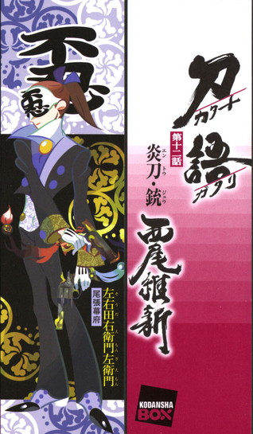
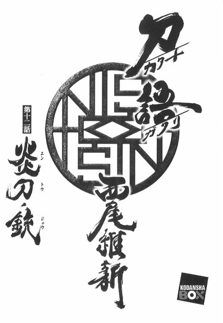
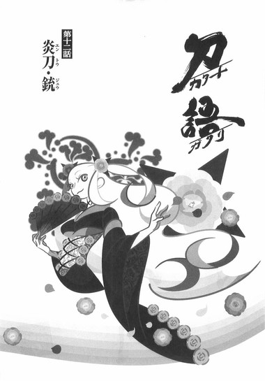
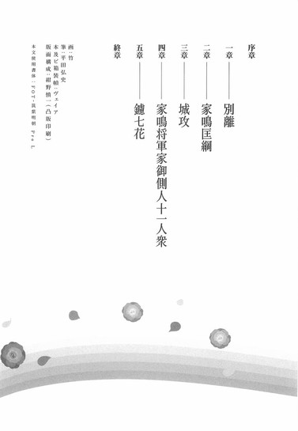
序章
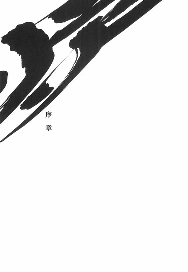
■ ■
さてお立会い。
まずはこの、短くも長かった歴史──長くも短かった歴史を、ここまで目を通してくださったことについて、このわたしは御礼を申し上げなければならないだろう。
誰に対して？
きみに対して。
とあるひとつの取るに足らない歴史の、ほんの一年間の部分を切り取って取り出して抜き出して、かように記述しようという試みに、実のところさしたる意味はなかったかもしれないのに、それにここまで付き合ってくれた酔狂は、わたしから見ればそれだけで価値がある。
価値。
もっとも、わたし自身は価値という言葉をそれほど信奉していないのだが。
何故なら、価値、あるいは価値観と認識される概念ほど、周囲の都合で引っ繰り返りやすいものはないからだ──そして一旦引っ繰り返ってしまえば、もう二度と、それらは元の形へと戻ることはない。
唯一でありながら失われやすい。
失われればもう二度と手に入らない。
そんなものに絶対の二文字を共通させろと言うのは、どうしたって無理な注文である。少なくともこのわたしにとっては。
そういうわけだから、価値のない話をしよう。
あるいは価値観のない話を。
今回（言うなれば、まさに今回であり、それはひょっとすると次回なのかもしれないが）、わたしが記述したこの歴史について、あるいは何らかの疑問──もっと言えば、何らかの批判を述べたいという向きも、きっとないでもないはずだ。
批判、そして不満。
わたしには、そのすべてに対応し、応え、また答えることなどできないけれど、しかしそれでも、その歴史をこうして閉じるにあたって、それなりの前口上を述べておくことには、ある程度の必要性を感じなくもない。
だからわたしはまずきみに問う。
かつて奥州の顔役、飛騨鷹比等がおのれの娘に問いかけたように──『そもそもきみは歴史とは何だと思う？』と。
彼がおのれの娘に、一体どういう気分でそんな質問をしたのかを思うと、わたしとしてはいささかの罪悪感を覚えなくもないのだが──まあそれはともかくとして。
きみには当然、きみの知る歴史があるだろう。
きみの歴史。
きみの歴史。
それは今回わたしが記述した歴史とはまるで違うものであり、その歴史を唯一のものとして認識するきみにとっては、逆にわたしが記述した歴史とはただの嘘物語にしか思えなかっただろうが──しかしこれまでわたしが繰り返し主張してきたように、歴史とは決して唯一無二ではない。
あるいは、やはり、歴史とは唯一でありながら失われやすい。
残念ながら。
きみの知る歴史は、きみの歴史なのかもしれないが──きみだけの歴史ではない。
たとえばの話。
いや、これはたとえばの話ではないのだが──それでも、一応は論理上かつ倫理上の気遣いとして、たとえばの話。
歴史とはただの文章である──と言う。
おのれが生まれる前の出来事について知ろうと思えば、それは過去の人間が残した文章・文献に頼らなければならない。全知全能の神ならまだしも、人間が過去に起こりしあれこれを知るためには、それ以外の方策はないのだ。
人は資料に頼らねば過去を紐解けない。
しかし、その文章の真偽を判別する方法は実はない──と言うより、文章なるものは、個人が記述する以上、どうあっても偽になってしまうものなのだ。結局、記録に残すということは、つまりは他人の眼を意識しているということなのだから。
他人の眼を意識する歴史？
そんな滑稽なものが他にあるか？
時系列において真と言えるのは現在だけだ。
過去には思い入れが入り、未来には希望が入る。
色褪せることなく色づけることなく認識することができるのは、たった今、つまりは現時点だけなのだ。
つまりこの場合、一行前の記述さえも信用できない──信用に足る記述とはただの一文字だけなのである。
そう、ある人物に対する記述が文献によってまるで異なるということなどさして珍しくもない──また、ある人物に対する評価が、時代によってまるで違うということも、よくある話だ。
その程度のことなのだ。
価値は引っ繰り返りやすい。
移ろいやすい。
そう。
歴史は移ろう。
どこまでも移ろう。
際限なく移ろう。
わたしがそうしたような歴史の改変──歴史の改竄なる行為は、実際のところ、それほど珍しいことではないのだ。
誰もが当たり前にやっていることである。個人的な話に換言してしまえば、誰だって、自分の過去を語るとき、そこには多少の誇張が入るものだ。
そうだろう？
決して簡単だとは思わないけれど。
それでも、だから歴史の改竄とは珍しいことではない。
だから。
誰かに読ませることを前提に書く歴史についての記述など言ってしまえばただの嘘だし、だからわたしは今回わたしが記述した歴史についても、それが歴史上の真実だと言うつもりは毛頭ない。
真実だとか、真相だとか。
または絶対だとか。
そんな言葉は空想の産物だ。
そもそも誰も信じていない。
ただし歴史がすべて嘘であるならば、わたしの記述したこの歴史も、そこに等価のものとして並べることには少しの躊躇いも覚えない。
黒歴史ならぬ嘘歴史。
その歴史もこの巻で終わる。
京都の無人島から始まったこの物語の幕は今、下りようとしている。
いよいよ。
何の必然性もなく生じたこの物語は、何の必然性もなく閉じていく。
結んで開いて──閉じていく。
終焉の地が尾張になるだろうことは、なんだか少し駄洒落っぽくて、わたしとしては酷く心外だが──だがもちろん、ここまで付き合ってくれたきみなら既にわかってくれているよう、今回の歴史のすべてがわたしの操作下・統制下にあったわけではないのだ。
想定外のことなどいくらでも起こる。
わたしは歴史が進行するにあたって多少の道筋をつけただけであって、そこを流れたのはあくまでも水流の意志だ。
水の意志をわたしは信じる。
そしてわたしにとって歴史とは、第一にそういう意味合いだ。
第二以下の意味合いは、語るまでもない些事である。
だから。
飛騨鷹比等の問いに、このわたしならばこう答える。
歴史とは──人のことであると。
鑢七花のことであり、奇策士とがめのことであり。
否定姫のことであり、左右田右衛門左衛門のことであり。
そして真庭忍軍のことでもあった。
それが歴史だ。
わたしの記述は虚構だが──彼らの人生は真実であり。
失われない唯一無二だった。
これからひとつの歴史のひとつの物語を終結させるにあたって、前口上として、事前に言っておきたいことがわたしにあるとすれば、それはつまり、そういうことだ。
歴史とは人である。
つまり歴史とはきみである。
きみの知る歴史はすべて嘘だが──
きみの知るきみは、決して嘘ではない。
今となっては、わたしにはきみが誰なのかも、そしてきみがどのような歴史を生きているのかも、知るすべもないが──どれほど知りたいと思おうとも知るすべはないが、それでも。
それでも願わくば。
きみが歴史を信じることなく、歴史に頼ることなく。
きみがただ、きみであってくれますように。
■ ■
──なんて。
最後はそんな締めで、こんなところから。
対戦格刀剣花絵巻。
世代交代時代劇。
刀語の最終巻。
刀語の──おしまい、おしまい。
一章 別離
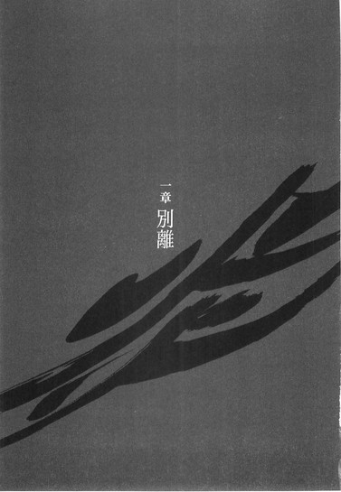
■ ■
「と──とがめっ！」
銃声。
それが銃声であったことなど、七花にわかるはずもない。そもそも七花はこの刀集めの旅の道中、一度たりとも鉄砲とは遭遇していない──にもかかわらず、その鉄砲が更に進化した形であるところの『それ』がなんだったのか、わかるはずもない。
左右田右衛門左衛門。
彼が両手にそれぞれ持つ、鉄のかたまりが何なのか──わかるはずもない。
もちろん──ここに現代人がいたなら一目でわかる。
ひとつは回転式連発拳銃。
ひとつは自動式連発拳銃。
そう、それはこの時代、この場所にあるはずのない、あってはならないはずの兵器だった──しかしその一対の『刀』は厳然として存在した。
即ち。
「四季崎記紀の完成形変体刀十二本が一本──最後の一本。炎刀『銃』」
と。
右衛門左衛門は──静かに呟く。
「奇策士とがめ。鑢七花。きさま達がふたりで集めた十一本に加え──この一対の刀で、完成形変体刀十二本、そのすべてが揃ったというわけだ」
そう言って。
奇策士とがめが取り落とした刀──今しがた、奇策士とがめと鑢七花が伊賀の新・真庭の里で、所有者であった真庭鳳凰から蒐集してきたばかりの、四季崎記紀の完成形変体刀十二本が十一本目、毒刀『鍍』を、右衛門左衛門は拾い上げる。
鉄のかたまり──炎刀『銃』は既に懐へと仕舞っていた。
「役目、ご苦労だった──奇策士とがめ」
そんな労いの言葉に。
奇策士とがめは応えない。
応えられない。
何故なら彼女は──
炎刀『銃』から発射された二発の弾丸によってその腹部を貫かれ、遥か後方へと吹っ飛んで──道の中央で、仰向けになってしまっているからだ。
どくどくと。
絶え間なく──腹部から血が流れ出している。
止まらない。
彼女自身を象徴するとも言える、十二単衣を二重に重ねて着たような、絢爛豪華な派手な衣装が──どんどん、血の色に染まっていく。
絢爛豪華さが失われ。
ただの赤に埋め尽くされる。
「あ......、あ、あ、あ、あああああああああああああああああああああああああああああああめあああああっ！」
七花は──咆哮する。
獣のように咆哮する。
何が起きたのか。
何が起こっているのか。
まるで彼には──理解できないのだ。
炎刀『銃』のことだけではない。
今、この場で何が起こっていて──どうなってしまったのか。
どう取り返しのつかないことになってしまったのか。
彼にはまるで──わからないのだ。
「な、なんで、なんで──こんな──」
思い出す。
どうしてこんなことになったのか。
ここまでは──言ってしまえば順調だった。
四季崎記紀の完成形変体刀集め。
刀集めで競い合った相手である真庭忍軍の根城、新・真庭の里──伊賀の山間において、真庭忍軍十二頭領のひとりにして真庭忍軍の実質的なかしらでもあった真庭鳳凰から、見事、毒刀『鍍』を蒐集した。
奇策士とがめの集めた十一本目の刀だった。
そしてそれは同時に、奇策士とがめと因縁深かった真庭忍軍との決着でもあった。
そして──事実上、それで刀集めは終わったはずだった。
最後の一本である炎刀『銃』は、とがめの天敵であるところの否定姫が所有しているだろうことを、彼女は看破していたからだ。
尾張幕府家鳴将軍家直轄預奉所軍所総監督、奇策士とがめに対する──尾張幕府家鳴将軍家直轄内部監察所総監督、否定姫。
幕府のふたりの鬼女。
だから──戦闘は終結し、ここから先は政治戦が行なわれるはずだった。
なのに。
伊賀からの帰り道。
これから尾張に戻ろうという矢先──
その道に、左右田右衛門左衛門が待ち構えていた。
否定姫の腹心。
元忍者──左右田右衛門左衛門。
腰に大小を差した、洋装仮面の男。
仮面には『不忍』の二文字が記されている。
しばらくぶりに会う──右衛門左衛門だった。
奇策士とがめが毒刀『鍍』を蒐集するのを予測して、先手を打って迎えに来たのだろうと、とがめは言った──七花もそうなのだろうと思った。
しかし違った。
右衛門左衛門は──出合いざまに、とがめを攻撃したのだった。
わけのわからない鉄のかたまりで。
その筒先から発射された弾丸で。
ぱん。ぱん。
そんな乾いた──しかし巨大な音で。
「え、え──右衛門左衛門ーっ！」
七花は、我を失い──そう怒鳴ったが、しかしそれに対して、
「不取合」
と。
右衛門左衛門は言った。
仮面の下の表情は──窺えない。
「そうがなるな、虚刀流──これはあくまでもわたしの仕事だ」
「な、なんで──どうしてとがめを！」
「言わなかったか？ その女が──かつての奥州の顔役、先の大乱の首謀者、飛騨鷹比等のひとり娘──容赦姫だからだ」
「よ──ようしゃ姫？」
奇策士とがめ。
本名不詳、経歴不明の女。
そのすべてが──詳らかにされている。
本名までは七花も知らなかったが──しかし。
飛騨鷹比等の娘というその経歴は、幕府の他の人間には、絶対に知られてはならないはずのものだった。
それを、右衛門左衛門が知っているということは──当然、否定姫も知っているということだ。
よりにもよってあの内部監察所総監督が。
とがめの正体を知ったということだ。
ならば。
「そう。ならばわたしが奇策士どのを撃ち抜くのは、至極当然の運びというわけだ。わかるだろうな？虚刀流」
「な──そんな」
七花は戸惑う。
焦る。
そんな七花に、右衛門左衛門は続ける。
「しかし、よもや奇策士どのが、飛騨鷹比等の関係者だったとはな──正直言って、この仮面では驚きを隠しきれない。容赦姫は確か逃亡中に頓死したはずだったのだがな──まさかそんな女が、こうも幕府の中枢にまで食い込んでいたとは、意外にも程がある。もしも──刀集めを最後まで完了していたなら、そしてそれに相応しい評価を得ていたとするなら......そんな恐ろしい話はない」
「ど──どうしてわかった」
「うん？」
「どうして──とがめの正体が」
「お前がそれを訊くか」
七花の問いに、右衛門左衛門は肩を竦めるのだった。
「お前にこれを教えるのは少々酷だが──しかし、わたしとしてはお前を気遣う必要はない、虚刀流。だから教えてやろう。お前のせいだよ──姫さまの前でのお前の挙動が不審だった。姫さまがそれに感づいただけの話だ」
あ、と七花は思う。
あのときだ。
否定姫との二度目の対面のとき──
誠刀『銓』の所在を教えられたとき。
誠刀『銓』が、奥州の百刑場にあると──そう教えられたとき。
飛騨鷹比等──飛騨城跡、百刑場。
奇策士とがめの──故郷。
否定姫の口からそれを聞いて、七花は確かに動揺した。
しかし──その動揺は隠したはずだった。
隠し切ったはずだった。
だが、それでは駄目だったのだ。
七花はあのとき──そもそも動揺してはならなかったのだ。
否定姫の眼が。
奇策士とがめの天敵である否定姫の眼が──そんな七花の挙動を逃すわけがなかったのだ。
「だ──だ、だからって！」
「だからって？ だから、で十分なのだ──飛騨鷹比等は先の大乱の首謀者だ。ゆえに飛騨鷹比等の関係者はひとりの例外もなく殺すのが規則。それを逃せば庇ったのと同義──つまりは同罪扱いを受ける」
「............っ！」
「実際、これは姫さまにとっても苦渋の決断だ──姫さまは決してこのような形で、奇策士どのとの決着をつけようとは思ってはいなかったはずだ。このような暴力的な決着は、姫さまの望むところからは程遠い」
右衛門左衛門は言う。
「姫さまと奇策士どのの対立の物語がこのような終結を迎えたのは──すべてお前のせいだ、虚刀流」
「そ、そんな──う」
呻いて。
振り向いて──倒れている奇策士を見て。
より一層赤色に染まった彼女の着物を見て。
血の染みこんでいく地面を見て。
「うわあああああああああああああああああああああああああああああああああああああああああっ！」
と──右衛門左衛門へと、殴りかかった。
虚刀流の技術も何もない、ただの勢いに任せたこぶしだった──そんなものが、元忍者であり、否定姫の腹心であるところの右衛門左衛門に通じるわけもない。
真庭海亀。
真庭鴛鴦。
真庭人鳥。
真庭忍軍十二頭領の名だたる面々を、まるで苦労することなく暗殺してきた右衛門左衛門に──そんな勢い任せのこぶしが通じるわけもない。
案の定。
右衛門左衛門はそんな七花を相手にさえしようとせず、一歩後ろに下がっただけだった。炎刀『銃』はもちろん、毒刀『鍍』さえ、腰の大小さえも抜こうとはしなかった。
「不取合」
と。
右衛門左衛門は繰り返した。
「虚刀流。この際だから言ってしまえば、わたしはいずれお前と戦うことになるのだろうと思っていた──四季崎記紀の完成形変体刀最後の一本、炎刀『銃』を持って、お前の虚刀流と戦うことになるのだろうと思っていた。少なくともそのつもりでいた。姫さまがどういう命令をわたしに下すにしろ──お前とわたしの戦いは避けられないだろうと、いつからかそう思っていた。それは刀集めとは、何の関係もなくな──」
「............っ！」
「しかし──その予想は大きく外れた。今となっては、わたしとお前が戦う意味は何ひとつない。わたしにとって最早お前は──なんでもない」
「......え、右衛門左衛門──」
「だから──情けをかけてやった」
右衛門左衛門は言った。
七花の後方の──奇策士とがめを指さして。
未だ尽きることなく、血を流す奇策士とがめを指さして。
「急所は外しておいた──奇策士どのは、まだ生きている」
「あ......あっ」
「もうすぐ死ぬが──まだ生きている」
そう言って──右衛門左衛門は七花に背を向けた。
戦いの中、対戦相手に背を向けた。
それは──七花のことを、右衛門左衛門は本当に、敵として見ていないということだった。
看做していないということだった。
戦いは──起こってさえいないのだ。
「末期の会話くらいは交わすがよかろう──そして聞いてやれ。奇策士とがめ。否──」
歩き始め。
七花から離れていきながら──右衛門左衛門は無感情に言った。
「容赦姫の、最期の言葉を」
「............っ！」
「彼女が何と言って、死ぬのかを」
去っていく右衛門左衛門を追うことは──七花にはできなかった。
あんな風に言われて。
踵を返し──とがめに駆け寄らないことなど、七花にできるわけがなかった。
仰向けに倒れている──奇策士とがめ。
今やその白髪さえ。
血の色に染まりつつあった。
「とがめ！ とがめ──とがめ、とがめ、とがめ、とがめ、とがめ！」
七花は、とがめの身体を抱え起こす。
両手が血に濡れるのにも構わずに──抱きかかえる。
「とがめ──」
「............聞こえておるよ」
と。
果たして──とがめは、七花の言葉に応えた。
弱々しくも。
しかし彼女らしく──力強く、応えた。
「腹を撃たれた──内臓を引っ掻き回された気分だ。なるほどな──今のが炎刀『銃』か。その仕組みはだいたい、理解した」
「と、とがめ──おい！」
瀕死の状態とは思えないような冷静な口調で、淡々と現状を分析するとがめに──むしろ七花は、戦慄さえ覚えた。
この状況で。
「とがめ──しっかりしろ！」
「......あとで、わたしの後方を、探索しろ。おそらくは弾丸......か、あるいはそれに類するものが二個、見つかるはずだ。七花。今から鉄砲のことを一から説明している時間はないが──まあ、弾丸のほうを見れば、そなたの戦闘感覚で、理解できなくもないであろう。重要なのは携帯性よりも──おそらく、速射性と連射性だ。そうでなければ、あの大きさに納める意味はないからな──」
「ど──どうでもいいよ！ 炎刀『銃』の特性なんて！」
七花は怒鳴る。
とがめの耳元で怒鳴る──この期に及んで目的を見失わない、見失おうとさえしない彼女を、叱責するように。
「今更──四季崎記紀の完成形変体刀のことがわかってもどうしようもないじゃないか！もう全部──ばれちゃったんだから！」
とがめの野心も！
とがめの目的も！
とがめの復讐も──すべて露見した！
「あんたは負けたんだ！」
七花は言う。
強く──目を閉じて。
「否定姫に負けて──尾張幕府に負けたんだ！」
「............」
「おれのせいで！」
七花は──声を絞り出す。
悔恨をめいっぱい詰め込んだ声を。
「また──また、おれのせいで！」
「............」
「親父のときと──同じだ！」
虚刀流七代目当主、鑢七花。
彼は先代当主であり父親でもある、大乱の英雄──鑢六枝を殺している。
殺した理由は──六枝が七花の姉である、鑢七実を殺そうとしたからだ。
規格外の天才である鑢七実を恐れ──おのれの娘を殺そうとしたからだ。
だから七花は六枝を殺した。
しかし、そもそも六枝が七実を殺そうとしたのは──七実の天才性が今もって成長していたことを、七花の不注意で、六枝が知ってしまったからだ。
七花がもっと注意深くあれば──
六枝は七実を殺そうとはしなかっただろうし。
七花は六枝を殺さずに済んだだろう。
それなのに。
そして、今回も。
同じ失敗を──繰り返して！
「ごめん、とがめ──おれはあんたの刀なのに、あんたを傷つけて──」
「──少し静かにしてくれるか」
取り乱す七花を──とがめは静かに、なだめるように言う。
「今......、とりあえず、今後の対策を練っておる」
「対策──」
「まあ、例によって奇策だがな」
そしてとがめはすっと目を閉じる。
まるで死に行くように、目を閉じる。
深呼吸するかのように、深く深くため息をついて──
それから、彼女は目を開けた。
「はあ」
と言って。
「......さすがに無理か。打つ手なしだ」
「とがめぇ！」
「そなたの言う通り──わたし達の負けだ。まあ......わたしが死ぬだけで、そなたが死ななかったのだから、よしとするか」
「な──何言ってんだよ！ あんたが死ぬわけないだろう！す、すぐに医者を──」
ここまでの道程を思い出す。
医者がいそうな村はどこかにあったか？
七花が全力で走れば、あるいは──
「無理だ。それも考えた」
とがめは言う。
平常時とまるで変わらない──彼女らしい言い方である。
「間に合う間に合わないの問題ではない──そもそも致命傷だ。色々考えたが......ちょっとこれは、どうしようもない。あの男......右衛門左衛門の言う通り、急所は外れておるようだが......出血がどうしようもない」
「だ、だったらおれの血をやるから！」
「それができれば......、苦労はないわ」
まったくそなたは──どうしようもないな、と。
とがめはこんなときでも──いつものように、相棒へと突っ込みを入れた。
「七花」
「な──なんだよ」
「わたしが死んだら──そなたひとりで『ちぇりお』を気合を入れるための掛け声として、日本中にはやらせてくれ......」
「な、何言ってんだよ！」
七花がとがめを怒鳴りつける。
「しっかりしろよとがめ──このくらいの傷で、傷で、何弱気なこと言ってんだよ！」
「わたしはもう無理だ──わたしはどうやらここまでのようだ......。だから七花、どうか『ちぇりお』のことだけは頼む......」
「無茶言うなよ！ 『ちぇりお』を間違った意味ではやらせるなんて、そんなのおれ一人じゃできないよ！」
「そなたならできるさ......そなたはわたしが選んだ刀だ......」
「無理だ！ とがめが、とがめがいてくれなきゃおれなんか何もできないよ！とがめがいなきゃ『ちぇりお』をはやらせるなんて無理なんだよ！」
「何を言う──この一年で、わたしはそなたに教えられる限りのことは教えた......もうわたしの奇策などそなたには必要ないさ。『ちぇりお』をはやらせることくらい、今のそなたには造作もない......」
「しっかりしろよ！ とがめにはまだ、やらなくちゃいけないことがあるだろう！」
「やらなくてはいけないこと、か......」
とがめはゆっくりと目を閉じ、薄く笑う。
「果たして、それは本当にやらなければならないことなのかな......ふふふ、わたしはどうして、そんなことにこだわっていたのだろう。たったひとり──家族を殺され、家を滅ぼされた恨みのために戦ってきたが......そなたとこれまで旅をして、わたしは初めて気付かされた......わたしのやってきたことは、本当は何の意味もないのではないかと......」
「と......とがめさん？」
「お笑い草だ......本当の幸せとは、過去を振り向くことではなく、誰かと共に、新たな命をはぐくむことにあると......前に向かって共に歩くことだと、そんなことにさえわたしはこれまで気付かなかったのだ......」
「だ、だからとがめ、それに気付くのはまだ早いって──」
「二十年間、孤独にこの道を歩んできたわたしだが......出会ってたかが半年のそなたに、わたしのほうこそ教えられた......人はどう生きるべきなのかを」
「いや、おれはまだ、そこまであんたの人生観を変えるようなことしてねえよ！」
「してくれたさ」
奇策士は。
血を吐きながら──はにかんだ。
「そなたはわたしに、数え切れないほどの何かを──してくれた」
「............」
「そなたのお陰で気付いたこと。そなたのお陰でわかったこと。そなたのお陰で見つけたこと。数え切れなくて......もう、わけがわからぬ」
苦しそうに──彼女は笑う。
「そなたのお陰で楽しかった。そなたのお陰で嬉しかった。そなたのお陰で笑って、喜んで、はしゃいで──まるで、自分が自分でないようだった。そなたのお陰で──わたしは、変われるのではないかとさえ思えた」
「とがめ──」
「だけど」
笑ったままで──彼女は言う。
切なそうに言う。
「結局、わたしは変われなかったのだ」
「............」
「これがわたしに相応しい──死に様であろう。わたしなど、この程度だ。そなたを所有する資格など──なかった。四季崎記紀の作りし完了形変体刀──虚刀『鑢』の所有者として、はなはだ不適合だったということだ」
「なんだよ──何言ってんだよ！ そんなわけないだろう！おれの所有者が──あんた以外にいるわけねえだろう！」
力の限り、七花は怒鳴り続ける。
「おれを腹心にしてくれるって言ったじゃねえか──刀を集め終わっても旅を続けて、一緒に地図を作るんじゃなかったのかよ！あんたにはおれがいるし──おれにはあんたがいるんじゃなかったのかよ！あれは全部、嘘だったのか！」
「......わたしは」
とがめは言う。
「わたしは最低の人間だよ」
「............」
「七花。わたしはそなたに色んなことを教えてもらいながら──それを何一つ生かすことはできなかった。わたしはそなたを変えることができたけれど──そなたにはわたしを変えることができなかったのだ」
「そんな──」
「全部、嘘だった」
すうっと笑みを消して。
そう告げるとがめ。
「刀集めの旅が終われば──わたしはそなたを、殺すつもりであったよ」
「............っ！」
「背後から刺すのでもよい。寝込みを襲うのも、布団の中を狙うのもよかろう。あるいは死ねと、ただ命令するのもよかったかもしれぬ──とにかく。今までと同じように──ことが終われば、状況を切り替えるつもりでおった。人間関係を──崩すつもりであった」
腹心にするつもりも。
まして旅を続けるつもりも──なかった。
とがめはそう言った。
「そ──そんなことは」
「そなたに感じた気持ちも、そなたから学んだことも──そなたを信じる心も、そなたを愛おしく思う気持ちも、そなたに対して抱いた情も。所詮わたしにとっては──奇策のための道具立てに過ぎぬ。七花、わたしにとっては──わたしの心でさえ、ただの駒に過ぎぬのだ」
心も──気持ちも情も。
利用できるものとしか──映らない。
わたしはそういう人間だ。
わたしは計算ずくでしか生きられないのだ。
「わたしはすべてを捨てておるのだ──わたしに心などあるはずもない。わたしはそなたを信頼した。しかしそなたを信頼したわたしという存在は──わたしにとっては駒に過ぎぬ」
「......と、とがめ──何を言って」
「父を殺した虚刀流の技──父を殺した虚刀流。わたしの目前で、父の首を刎ねた虚刀流。はっ──許せるわけが、なかろうが」
そんなことを──
突き放すように、とがめは言い捨てる。
「世代も交代しての七代目だから、そなただから許そうと思ったそんな気持ちも──わたしにとってはただの駒だ。そなたを駒でないと思ったそんな気持ちも──わたしにとってはただの駒だ」
「だ、だったら──あんたにとって感情って、一体何なんだよ」
おれが得た──
おれがこの一年で得た喜怒哀楽って、一体何なんだよ！
あんたから教えられたこの感情は──何なんだ！
七花は、悲痛を込めて、そう叫ぶ。
「言ったろう。駒だ。喜びも怒りも哀しみも楽しみも──すべてわたしの駒だ。制御する必要のない、取るに足りない代物だ」
「............」
「それでも──そなたにとっては、大切な代物だったようだがな。無感情で無感動だった頃のそなたとは──今のそなたは、まるで別人だぞ」
「で、でも──」
「感情は使いようによっては武器になる。そういうことだ。それはそなたも、十分に学んだことであろう？」
「だ──だからって。どうして、そんな嘘をつく必要があったんだよ」
七花は──泣き笑いのような顔で、とがめに対して言う。
腹心だとか、地図だとか。
そんなことを言わなくても──
「おれはあんたが死ねと言ったら、いつでも死ぬのに」
「......だから」
七花の言葉に──とがめはやるせなさそうに、応えた。
「言葉は嘘でも──気持ちは嘘ではない」
「............」
「そんな風に思っていることをあそこで言うのが一番いいと、そう考えただけだ。それが叶わぬことだと知っていたところで──それを関連付ける必要性までは感じなかった」
「で、でも、それじゃあ──」
七花は──思ったことを。
それこそ、そのまま口にする。
「──結局、一番傷ついてるのは、あんたじゃないか」
「そうだよ？」
とがめは──何ということもなさそうに、そう頷いた。
「そうでなければ──奇策など練られない」
「......どうして──そこまでするんだ。あんたが、何でそこまでしなくちゃならないんだ。何を言ったところで──」
七花は言う。
おのれの父親──鑢六枝を思い出しながら。
「──たかが、父親じゃないか」
「............」
「あんたがすべてを捨ててまで──どうして復讐しなくちゃいけないんだ。あんたの人生って、だったら一体何のためにあったんだよ。あんたは父親じゃなくて──あんたなのに」
「まったく──その通りだ」
「父親が殺されるなんて、周りの人間全員が殺されるなんて、そんなとんでもねえ目に遭ったんだ！だったらあんたには──あんたにだって、幸せになる権利はあったろうが！それなのに、傷ついて傷ついて傷ついて、最後には、こんな道半ばで撃たれて死んで──あんた一体、何やってんだよ──馬鹿じゃないのか!?」
「だから──まったく、その通りだ」
でもな、と。
とがめは──ここで再び、はにかんだ。
「わたしは──今、とても幸せだよ」
喜んでいるかのように。
怒っているかのように。
哀しんでいるかのように。
楽しんでいるかのように。
はにかんだ。
「道半ばで撃たれて死んで──幸せだ」
「............っ！」
「これで、そなたを殺さずに済んだのだから」
こんなに嬉しいことはない──と。
奇策士とがめは──そんなことを、言ったのだった。
「やっと......やっと、これで......、やっとこれで......全部、やめることができる」
「......死ななきゃ、止まれなかったのか？」
とがめは──いつからか、瞳に大粒の涙を浮かべていた。
対する七花も、いつの間にか、滂沱の涙を流している。
それは。
このふたりに──満ち溢れんばかりの感情が満ちている、確かな証拠でもあった。
「こんなことになるまで──あんたは止まれなかったのか？」
「......そなたのせいでは、ないよ」
とがめは大いに泣きながら──それでも言う。
「むしろ今となっては、あのお姫さまに感謝したいくらいだ──あいつがそなたの挙動に不審を覚えてくれたからこそ、やっとわたしは──この血道から、解放されるのだから」
「............」
「もしもお姫さまに会うことがあれば──礼を言っておいてくれ。いや......」
言いさして──とがめは、ゆるりと、首を横に振った。
「......そんな機会は、もうないか」
「と──とがめ」
「虚刀流七代目当主──鑢七花。最後の命令だ」
そう前置きをして──とがめは七花の目を、真っ直ぐに見つめた。
どれだけ瀕死の状態であろうとも──
彼女の眼はうつろにはならず。
しっかりとした光が宿っていた。
「わたしのことは忘れて──これまでの何もかもを忘れて、好きなように生きろ」
「......好きなように──」
「間違っても、わたしの遺志を継ごうなどと思うな──そなたとの契約は、わたしの死をもって終了する」
「............」
「島に帰りたければそうすればいいが──しかし、あえてそうする必要もあるまい。六枝も七実もおらぬのだからな──そなたを表の世界に引っ張り出すことが、七実との約束でもあった」
「ね、姉ちゃんとの──」
「虚刀流の名誉を回復するという約束は、守れそうにないがな──飛騨鷹比等の娘であるわたしの関係者ということでそなたが処罰されることは、まあ、ないであろう。おそらく虚刀流はわたしに利用され、騙されていただけだと、そういう風に判断されるのであろうな。右衛門左衛門がわたしだけを撃ち、そなたを見逃したのは──そういうことだ。だから──そなたはこれでもう、自由だ」
「............」
「こなゆきのいる三途神社に行くのもよいであろう──天童の心王一鞘流、汽口慚愧も、一度は門下生としてそなたを取ったくらいだ、悪いようにはされまい。なんだろうな。そなたには、ああいう純真な奴らがお似合いだよ」
「......こんなときに、何言ってんだよ！」
「こんなときだから、だ」
とがめの言葉に──七花は気付く。
とがめの腹部。
左右田右衛門左衛門から二発の銃弾を受けた──奇策士とがめの腹部。
とめどなく血があふれ出ていたはずの傷口から──いつからか。
血の流れが止まっていることに。
まるでそれは。
すべての血液が──流出してしまったかのようだった。
奇策士とがめの肌の色が。
今はもう──髪の色よりも白い。
「そなたはもう、わたしに惚れずともよい。わたしに縛られる必要は──何もない」
「あ、ああ──」
「わたしはもうそなたの主人でもないし、相棒でもない。ただの──死にゆく者だ。死んで朽ちるだけの、敗北者だ」
「............」
「そなたほどの刀を使いこなせなかったことを──許してくれ」
「そんな──あんたがいなきゃ、おれなんて──すぐに死んでたよ。すぐに折れて曲がって──錆びて、終わってたよ」
不承島で、真庭蝙蝠と。
因幡砂漠で、宇練銀閣と。
三途神社で、敦賀迷彩と。
巌流島で、錆白兵と。
濁音港で、校倉必と。
踊山で、凍空こなゆきと。
護剣寺で、鑢七実と。
不要湖で、日和号と。
天童将棋村で、汽口簡塊と。
百刑場で、彼我木輪廻と。
新・真庭の里で、真庭鳳凰と。
ずっと──戦ってきた。
生き残れたのは、隣にとがめがいたからだ。
とがめのために戦ったからだ。
そうでなければ──七花はとっくに、死んでいた。
折れて曲がって──錆びていた。
「もう、わたしのために戦わずともよい」
しかしとがめは──そう宣言した。
はっきりと。
身体中の血を失いながらも──はっきりと、七花にそう言った。
「わたしの命令は、すべて忘れろ。わたしのことも──すべて忘れろ。こんな無様な、結局は最後まで、そなたのことを駒としてしか扱えなかった──そなたのことを駒としてさえ扱えなかった、馬鹿な女のことなどさっさと忘れろ。そしてそなたは──好きに生きろ」
「ふざけんなよ......あんたといることが──、おれの好きなことだったのに」
七花は涙まじりに、独り言のように。
しゃくりあげながら──子供のように言う。
「おれはあんたが──本当に好きだったのに」
「......七花」
「これから──どうすればいいんだよ。あんたがいなきゃ、おれは何にもできないよ」
「......甘えたことを吐かすでない。まったくそなたは──いつまで経っても、子供だな。本当に──可愛い奴だ」
そんな七花を──とがめは、とても遣る瀬無さそうに見て。
そして──腕をあげた。
そっと──七花の頬に触れる。
「なあ──七花」
七花の涙を。
彼の成長の証を──拭い取りながら。
奇策士とがめ──容赦姫は言う。
ありとあらゆる状況を想定し、どんな事態にも対応できるように気を配っていた彼女が唯一、まったく考える必要のないものとして位置づけていた──散り際の一言を、口にする。
「わたしは自分勝手で自己中心的で、復讐のこと以外は何も考えることができず、死ななければ治らないような馬鹿で、そなたを散々道具扱いした、酷い、何の救いもないような、死んで当然の女だけれど──それでも」
今思っていることを。
そのまま、飾らずに言う。
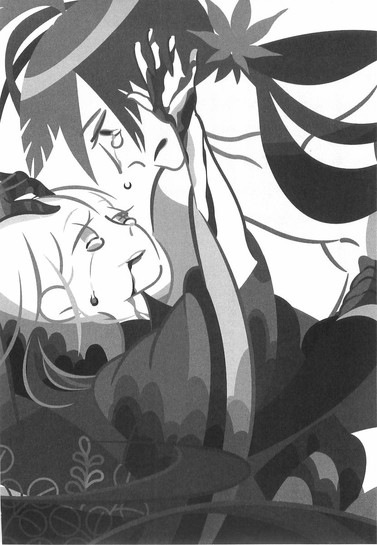
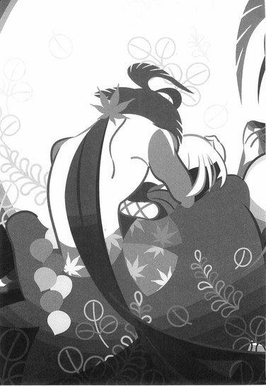
「わたしはそなたに、惚れてもいいか？」
■ ■
尾張幕府家鳴将軍家直轄預奉所軍所総監督、奇策士とがめ。
志半ばにして──凶弾に倒れる。
これをもってして、奥州の顔役にして先の大乱の首謀者、飛騨鷹比等の血統は──完全に途絶える運びとなった。
二章 家鳴匡綱
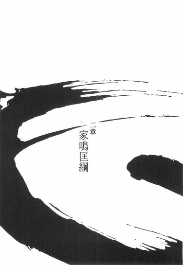
■ ■
幕府にふたりの鬼女あり。
ひとりは奇策士とがめ。
ひとりは否定姫。
共に本名不詳、経歴不明の彼女達は、かように並べて語られることが多いが──そして実際、相対して政治闘争を繰り広げたことも一度や二度ではなかったが、しかし、だからと言って、決してこのふたりの利害が一致していた、あるいは利害の方向が逆を指していたというわけではない。
奇策士には奇策士の目的があり、それは否定姫の立場とは関係がなかった。
そして否定姫にも否定姫の目的があり、それは奇策士の立場とは──関係がなかった。
ふたりの利害が一致したのは、あくまでも四季崎記紀の完成形変体刀集めという、ただそのひとつの事象においてのみだったのだ。
それさえ、奇策士と否定姫では、完成形変体刀に関する認識はまるで違うものだったのである。
奇策士にとっては、他のすべてが、おのれの気持ちさえもそうであったように、完成形変体刀十二本はすべてただの駒、自らの復讐のための道具立てでしかなかった。
しかし否定姫にとって──四季崎記紀の完成形変体刀は、ただそれだけで十分な意味を持つ代物なのである。
自分の代わりに、敵対していた奇策士が完成形変体刀集めを行なってくれたことは──彼女にとっては僥倖以外の何物でもなかった。
もちろん、彼女は覚悟を決めていた。
左右田右衛門左衛門がそうであったように。
刀を十一本集めたところで──奇策士と虚刀流とを相手取って、最終決戦をすることになるだろうと、そう覚悟を決めていた。
結果としてその覚悟は無駄に終わってしまったわけだが──だからと言って、それで否定姫にやることがなくなったわけではない。
否定姫。
否定姫には否定姫の──目的がある。
右衛門左衛門が奇策士を始末した今──彼女を止められるものは、既に幕府内にはいない。
おのれに敵対しそうな勢力は──内部監察所総監督の権力を駆使して、既にあらかた片付けてある。そのための内部監察所だった。
奇策士以外のすべては潰していた。
そしてその奇策士も──今はもういない。
だから。
いよいよ、彼女は動く。
彼女にとっての歴史に幕を下ろすために──戦国を支配した伝説の刀鍛冶、四季崎記紀の末裔であるところの否定姫は、ようやくのこと、動き始める。
■ ■
家鳴将軍家のお膝元──尾張。
その中心に位置するのが尾張城である。
その巨大さ、荘厳さは、いつぞやの下酷城とは比べ物にならない──その構造も複雑怪奇で、正に守りに長けた、要塞の如き建築物である。
もっともずっと昔からそうだったわけではない。
二十年前の大乱を受け──ここまで、いっそ過剰と言えるほどに、守りを固めたのである。城の内部の、幕府中枢部の人間に万が一のことがあってはならないという、そういう配慮がなされているのだ。
そしてその尾張城の天守閣。
尾張城下の町を──ともすれば日本国中を望めそうな最上階の一室に。
金髪碧眼。
この国においては異端の美貌。
しかし和装が誂えたようによく似合う女──
否定姫は──招かれていた。
もちろん、この場において上座に座れるような身分では、否定姫はない。
何せ、正面におわすは──
御簾の向こうで、影のみが見えるそのおかたは。
「よくぞ参った。面をあげよ」
畳の上に額をつけていた否定姫に、上座から──そんな声がかけられる。
「余が尾張幕府八代将軍──家鳴匡綱じゃ」
「......恐悦至極にございます」
言って。
否定姫はゆっくりと──顔を起こす。
尾張幕府八代将軍。
雲の上の人物。
ついにお目通りがかなった──と思う。
これはきっと、奇策士の望みでもあったことだろう、と否定姫は思う。奇策士は家鳴将軍と対面しようと──幕府内へと這入り込み、そのための最終手段として、四季崎記紀の刀集めに手を出したのだろう。
それは失敗した。
否定姫が失敗させたようなものだが──しかし。
その行ないは決して無駄ではなかった。
こうして──結果として、彼女の天敵であった否定姫が、将軍と対面することができたのだから。
「......しかし、大御所さま」
否定姫は言う。
意外と、それほどの広さでもないこの部屋に──ひしめき合うようにしている、周囲の人間を横目で見遣りながら。
ひとり、ふたり──十一人。
十一人いる。
否定姫と将軍──匡綱を除いて、十一人の人間が、今、この天守閣にはいるのだった。
この状況は否定姫にとって好ましくはない。
「大御所さま。お人払いを──お願いしたはずですが」
「そのほう、随分とあけすけにものを言う女じゃな──聞いておった通りじゃ」
と。
御簾の向こうで──匡綱は笑う。
声からすると、かなり高齢の老人だろう。
将軍の正確な年齢を、否定姫は把握していないが──まあきっと、奇策士ならば把握していたんだろうな、とも思う。
先の大乱時、指揮を執ったこの将軍の年齢くらいは──把握していなければおかしい。
「──まあ、これからする話を思えば、家臣どもを退けろというそのほうの要求はわからなくもなかったゆえ、そのようにしたがのう。じゃがしかし、こやつらは余の腹心であり、護衛兵じゃ。この場から外すわけにはいかん」
「............」
「安心せい。こやつらは代々将軍に仕えてきた者どもじゃ──繋がりは絶対であり、裏切るようなことはありえん。元を辿れば敵同士でしかなかったほかの家臣どもとは位が違う──言うなれば余と一心同体じゃ」
「......左様でございますか」
と。
否定姫は──内心で失笑しながら応える。
一心同体？
随分な言葉を──平気で使う。
耄碌したのか、それとも素よりこうなのか。
いずれにせよ──もらったものを受け継いだだけの八代目など、この程度か。
目通りをしてほんの短時間で、否定姫は家鳴匡綱の値踏みを終えた。
その値は当然、それほど高いものではない。
しかし──むしろそのほうが否定姫にとっては都合がよかった。
──一心同体っていうのはね、大御所さま。
──わたしと、右衛門左衛門みたいな付き合いのことを言うのさ。
そんなことを思いながら、
「では、早速本題に入らせていただきます──大御所さま」
と──否定姫は切り出した。
「四季崎記紀の完成形変体刀の──由来と伝来の話を」
「......一応、確認しておこうかのう。そのほうがかの刀鍛冶──四季崎記紀とやらの末裔であるというのは、確かなことなんじゃな？」
「......ええ」
四季崎記紀とやら。
とやら──と来たか、と否定姫は思う。
幕府の上層部、そのほとんどがそうであるように──その頂点である将軍もまた、かの刀鍛冶、否定姫から見れば『ご先祖さま』を、詳しく知っているわけではないらしい。
いや──そもそも知らなかったのだろう。
四季崎記紀のことも、変体刀のことも、完成形変体刀のことも。
戦国時代ならまだしも──四季崎記紀が生きながらにして伝説と呼ばれていた時代ならまだしも、今はいくさらしきいくさもほとんどない、天下泰平の時代である。
だから──奇策士とがめが企画・立案した刀集め、そして彼女が刀を蒐集するたびに幕府に寄越していた報告書によって、四季崎記紀の知名度は跳ね上がったのだった。
──まったく、あの不愉快な女は。
──自由過ぎるし──大胆過ぎる。
──羨ましい限りよ。
もっとも、そのお陰でこの状況が築けているのだから──否定姫としては、彼女に感謝しないわけにはいかないのだが。
否定姫は、周囲の十一人のことを忘れ。
否定し。
ただ、御簾の向こうの家鳴匡網に対して──言葉を紡ぐ。
「間違いありません」
「......何か証拠はあるのか？」
「証拠？ 物事を判断する際、証拠に頼るのは愚か者のやり方です──それはこれからのわたしの話を聞いて、判断していただければと思います」
「ぬかしおるわ。ならば申せ」
「はい」
否定姫は頷いて──
胸元から鉄扇を取り出し、それをばんっ！と開く。
「そもそも四季崎記紀という男は──刀鍛冶ではございません」
まず──そこから切り込む。
ずっと尾張にい続けた否定姫は知るよしもないが、それは、毒刀『鍍』に憑依された真庭鳳凰の口から、奇策士とがめが聞いた情報でもある。
しかし。
奇策士がほんの短い間に鳳凰から聞いた、その情報以上のことを──当然、四季崎記紀の末裔である否定姫は知っている。
「彼は──元を糾せば占術師の家系でした」
「占術師？ ほう」
意外そうに相槌を打つ匡綱。
興味をそそられたようだ。
「それはまた──意外な職業じゃな」
「錬金術師やら魔術師やら、彼は色んな言い方をされていますからね──それに比べれば、まだまともなところと存じます」
否定姫はそう受けて、続ける。
「何千年も前から続く、由緒正しき──とは言わないにせよ、歴史ある占術師の家系でした」
歴史、と強調して言う否定姫。
もっとも、その意味は、周囲の十一人はおろか、匡綱にさえ通じはしないだろうが。
「そうなると、つまり──そのほうもまた、占術師であるということかのう？」
「いえ。占術師としての一族の歴史は、四季崎記紀の段階で切られました。四季崎記紀が自らの手で──その伝統に終止符を打ちました」
「ふむ。それはどうして」
「彼の目的──否、一族の目的のためです」
否定姫は鉄扇を揺らしながら、言った。
「あえて『わたし達』という言い方をさせていただきますが──わたし達の目的は、歴史の改竄にありました」
「歴史の──改竄？」
「ええ。占術師とは、つまりは未来を知る者。そして知った未来を変えることが──わたし達の目的だったのです」
歴史を変えることが──わたし達の目的だったのです。
否定姫はそんな風に見得を切る。
「そのための完成形変体刀でした」
「......完成形変体刀、のう」
「ええ。僭越ながら、説明させていただきます──四季崎記紀の変体刀。戦国時代を実質上支配したと言われる伝説の刀鍛冶、四季崎記紀の『作品』。その所有数がそのまま国力に繋がったとさえ言われていますが──」
間を取って。
それから否定姫は、
「──それこそが、四季崎記紀の思惑通りだったのです」
と言った。
「つまりは、実質上どころではない──四季崎記紀は実際に、戦国時代を支配していたとさえ言えましょう」
「............」
「今回、奇策士が集めた十二本の完成形変体刀について、説明しましょう」
絶刀『鉋』。
斬刀『鈍』。
千刀『ツルギ』。
薄刀『針』。
賊刀『鎧』。
双刀『鎚』。
悪刀『鐚』。
微刀『釵』。
王刀『鋸』。
誠刀『銓』。
毒刀『鍍』。
炎刀『銃』。
「四季崎記紀が作った刀は千本──そのすべてが異端の刀であり、通常わたし達が想定する日本刀とは一線を画すものですが、中でも異端振りが激しいのが、完成形変体刀です。残りの九百八十八本は、すべてこの十二本のための習作とさえ言えましょう──」
「ふむ」
「世界の何よりも固き、折れず曲がらぬ絶対の刀──」
絶刀『鉋』。
「ありとあらゆる存在を一刀両断にできる、鋭利な刀──」
斬刀『鈍』。
「いくらでも替えが利く、恐るべき消耗品としての刀──」
千刀『ツルギ』。
「羽毛のように軽く、硝子細工のように脆い、美しき刀──」
薄刀『針』。
「守りに重きを置いた、巨大な防御力を有する、甲冑を模した刀──」
賊刀『鎧』。
「すさまじい質量のかたまりであり、持ち上げることさえ満足に適わない刀──」
双刀『鎚』。
「所有者の死さえ許さず、無理矢理に人を生かし続ける凶悪な刀──」
悪刀『鐚』。
「武器でありながら人である、恋する殺人人形とも言える刀──」
微刀『釵』。
「人を正し、心を正す、精神的王道を歩ます、教導的な解毒の刀──」
王刀『鋸』。
「人間の姿勢を天秤にかけるように、人によって受け取り方さえ違う曖昧な刀──」
誠刀『銓』。
「所有すると人を斬りたくなる、刀の毒がもっとも強く内包された刀──」
毒刀『鍍』。
「遠距離からの連続精密攻撃を可能にした、飛び道具としての刀──」
炎刀『銃』。
「──以上、四季崎記紀の完成形変体刀十二本にございます」
「......そのすべてを、そのほうの指揮の下──奇策士とやらが蒐集したというわけか」
「ええ」
頷いた。
その認識は大いに間違っているが──しかし、今となってはそれが真実のようなものだ。
手柄を横取り──したつもりもない。
ただ。
否定姫は奇策士との勝負に勝った──と、それだけのことだ。
しかし──奇策士にも『とやら』がつくか。
その事実に、否定姫は、少なからず感じるところがあった。
しかしそれをおくびにも出さずに──話を進める。
「ちなみに、この尾張城の第三武器庫にそもそも保存されていた、通常形変体刀九百八十八本と合わせて──現在、四季崎記紀の作りし変体刀は『すべて』、ここに蒐集されたという運びになります。これは──かの旧将軍でさえなしえなかった成果であります」
「ふっ」
それを聞いて。
家鳴匡綱は、まるで自分の手柄のように──得意げな笑みを漏らした。
自分で何をしたわけでもなく、指示ひとつしたわけでもない癖に。
あたかも自分自身が、旧将軍を凌駕したかのような態度だ。
当然、そんな思い違いを正してやるような立ち位置に、否定姫はいない。
構わず、取り合わずに──続ける。
「変体刀が一箇所に集った状態。この状況こそが──四季崎記紀が目論んだひとつの状況だったのです」
「うん？ それはどういう意味じゃ？ 戦国をかき乱すことが──かの者の目的ではなかったのか？」
「まさか。歴史の改竄とは、そういった意味ではございません──いたずらに世を乱すことを想定していたわけではありません。彼の──あたし達の目的は、言うなれば世直しでさえあったのです」
「世直し──とな」
「大御所さま。先ほど申し上げた、完成形変体刀の特性ですが──これらの常識の範囲を越えた特性を、四季崎記紀がどのようにして作り上げたのか、不思議に思われるでしょう？」
「いや？」
否定姫からの問いかけに、家鳴匡綱は首を振ったようだった。
「不思議も何も──それはそもそもそういうものなのではないか？」
「............」
否定姫は、にんまりと笑みを作る。
表面上は、『大御所さま』の器の大きさに感銘を受けているかと見えるように。
──それはそもそもそういうもの、か。
──まあ確かにそうなんだけどねえ。
そう言えば、奇策士が、いつだったか似たようなことを言っていたような気がする──いや、彼女が幕府に送ってきた報告書に、そう書いてあったのだろうか？
まあどちらにせよ。
同じ言葉であろうと、言う人物が違うだけでこうも印象が違うとは──それはちょっとした驚きだった。
考えても仕方ないことを考えずに済ますという奇策士の才能。
それは何も考えないのとはわけが違う。
ただの思考の放棄とは違ったのだ──と、改めて思い知らされた。
──しかし、面白いわね。
心中で否定姫は失笑する。
先ほどから随分と、目前の匡綱と、奇策士を比べている自分に気付いたからだ──
ただ、人の上に立つものとして──どちらが相応しいのかは、一目瞭然だった。
そこはさすが──
──さすが、飛騨鷹比等の娘と言ったところなのかしらね。
奥州の顔役──飛騨鷹比等。
「......端的に言いますと、変体刀とは未来の技術を用いて製作された刀剣なのです。この時代では不可能ごととしか思えないことであれ、百年後、二百年後、あるいは千年後の世界であれば──ただの当たり前の技術なのです」
「............」
「百年前、二百年前にはなかった技術も、現在では当たり前の技術でしょう？同じことですよ。そして四季崎記紀にはその能力があった──予知能力。まあ、占術師としてのたしなみですね──一族の中でももっとも強い能力を有していましたから。それこそ伝説的な──才能でした」
「ふん。まあ、刀の由来などどうでもよいわ」
匡綱はそう言った。
話が理解を超えたのかもしれない。
「問題は、四季崎記紀がそんな大それたことをした理由じゃ」
「......そうですね」
頷いてみせる否定姫。
表情は変わらない。
「歴史の改竄と言われてものう──そもそもどうしてそんなことをする必要があったのか、とんとわからぬ。そもそも占術師というのは、未来を変えようとはせぬものではないのか？」
「生憎──申し上げました通り、歴史を変えることが、わたし達の目的でありましたので」
通常の占術師の常識は当てはまりません、と否定姫は言う。
「ふむ。未来とは──運命とは、変えられるものなのか？」
「未来や運命はともかくとして──歴史は変えられるものです。実際、わたしの一族はずっとそうやってきました──もっとも、これも申し上げました通り、未来予知の能力自体は四季崎記紀が使い切ってしまいましたので、わたしはほとんど受け継いではいないのですが」
「なんじゃ。つまらぬ」
露骨に──匡綱は失望したようだった。
まあ、ここでは嘘をついてもよかったのだが──あまり期待されても困る。
これでも身の程は弁えているつもりだ。
「とは言え、歴史には修正能力がありますからね──いくら大きく変えようとしても、元に戻ろうという力が働きます。正しくあろうという力がね」
「正しくあろう──しかし、そのほうは先ほど、世直しと言わなかったか？」
「そう言いましたが、まあ、それは言葉の綾のようなものですね。わたし達が革命家であることは確かですが──行なってきたことは、歴史の破壊活動と言ってもよいのかもしれません」
「破壊活動」
「たとえば──飛騨鷹比等」
当然、奇策士のことを思い出しながら。
彼女との政治闘争を、色々と思い出しながら。
彼女に味わわされた辛酸を、色々と思い出しながら──否定姫は言う。
「彼は歴史の修正者でした」
「......？」
「二十年前。どうして、飛騨鷹比等が大乱とも言われる、あのようないくさを起こしたのか──意外とそれは、追究されておりません」
「ふん──飛騨か。あやつの話は、あまり聞きたくないのう」
不快感を隠そうともせず、匡綱は言った。
「あやつがどうしてあのようないくさを起こしたのか──じゃと？」
「ええ。飛騨鷹比等は──まあ、平和主義者と言えば聞こえがいいですが、争いごとを嫌う、一国の領主としてははなはだ不適格な、武将らしからぬ男であったと言います」
あまり気分を害されても困るので、否定姫はわざと、飛騨鷹比等をあしざまに表現した。
「さような男が、一体、この天下泰平の世において、どうして全国規模の反乱を起こしたのか──ということです」
「天下が欲しかったのではないのか？」
「まあ、その認識が一般的でしょうが──しかし、本当は、歴史を修正するためだったのです」
彼は。
飛騨鷹比等は。
歴史を正そうとしたのです──と、否定姫は、はっきりと断定した。
「歴史を──正すために」
「奇策士からの報告書にもあったよう、誠刀『銓』は、そもそも飛騨鷹此等が城主であった飛騨城の地下深くに埋められていたのですよ正当な所有者はまた別の、彼我木輪廻という名の仙人だったのですが──」
「仙人？」
「あ──いえ、聞き流してください」
話がそちらに逸れては厄介だ。
錆白兵や鑢七実という例外を除けば、完成形変体刀の所有者の中で、否定姫がもっとも警戒していた相手が、実のところ彼我木輪廻である。そのため、ついうっかり名前を挙げてしまったが──
それはここでは関係のない話だ。
もっとも。
仙人である彼我木輪廻にしろ、剣聖である錆白兵にしろ、天才である鑢七実にしろ──否定姫の一族が歴史を改竄したからこそ、生まれ得た存在なのだけれど。
真庭忍軍や凍空一族と同じように。
......計算通りにはいかないものだ。
それも──あるいは、歴史の修正作用と言われれば、その通りなのかもしれないが。
「とにかく──飛騨鷹比等は、変則的な形ではありますが、知っていたのです。四季崎記紀の完成形変体刀について──そして勘のいい彼は、それだけで四季崎記紀の、そしてわたし達の目的に気付いた。わたし達の破壊活動に──気付いた」
「勘がいい──か」
「ええ」
少しでも飛騨鷹比等が褒められることが気に入らないのだろうか。
だとしたら、随分と器の小さいことだ。
まあ──逆に考えれば、器の小ささというのは、権力者に必要な資質なのかもしれないが。
それに、匡綱は煮え湯を呑まされている。
飛騨鷹比等のせいで、匡綱はこの天下泰平の世で唯一、いくさを起こされてしまった将軍として歴史に名を残すことになってしまったのだから。
──歴史に名を残す、か。
──まあ、精々気にしなさいよ。
「勘がいいと言うより、それは誠刀『銓』の特性ゆえとも言えましょうね──かの刀は、人を測る天秤ですから。とは言え、さすがに、所有者でもなければ実際にその刀を手に取ったわけでもない飛騨鷹比等は──それほど、歴史の真相に近い場所にいたわけではありません。ただ、彼は──歴史という水面に、一石を投じ、波紋を起こそうとしただけのことなのです」
「ふん。そうであろうよ」
匡網は言う。
「所詮その程度の男じゃ」
「............」
別に、匡綱が飛騨鷹比等をどう思っていようと、否定姫にはそんなこと、何の関係もないけれど──しかし。
まだそれを──教える段階ではないとは言え。
もしも奇策士が──尾張幕府家鳴将軍家直轄預奉所軍所総監督・奇策士とがめが、彼のひとり娘であることを知ったとすれば、そのとき、一体御簾の向こうの男は、どういう反応を見せるのだろう、と、そうは思う。
奇策士が刀集めを企画・立案したのは否定姫にとって幸運な偶然だ。
僥倖以外の何物でもない。
だが──彼女が飛騨鷹比等の娘だとすれば、そこには別の意味合いもあったように思う。
飛騨鷹比等が歴史の水面に投げた一石。
それは──波紋を起こし。
そして──最終的には、歴史上、誰にもなしえなかった変体刀の完全蒐集にまで至った。
もっとも、それは飛騨鷹比等の目的からすれば逆効果でしかなく──結果としては、間違った歴史を更に間違った方向へと導いただけのことではあったが。
しかし。
──会ったことはないけれど。
──さぞかし、いい男だったんだろうね。
否定姫はそんな風に思って──くすりと声を漏らす。
「......それに、大きなところではもうひとり」
「うん？」
「俗に言う旧将軍もまた──歴史の修正者でありました」
有史上、初めて天下を統一した男。
四季崎記紀の変体刀に取り憑かれた男。
「刀狩令──日本国中にあるすべての刀を蒐集しようという常軌を逸した法令。表向きの理由は土佐の清涼院護剣寺に、刀大仏を建立するため、裏向きの理由はこの世から剣士という生き物を撲滅するため、そして真の理由は四季崎記紀の変体刀千本すべてを蒐集するため──と言われておりますし、また、そのすべてが正解でもあるのですが、もうひとつ──何と言うのでしょうね。元の理由とでも言いましょうか──そういうものがあったのです」
「それが、歴史の修正だと？」
「まあ、そういうことになりますかね──実際のところ、旧将軍がその気になっていれば、完成形変体刀十二本も集められなくはなかったのだとわたしは考えますよ。彼の所有していた武力を真正面から行使していれば、少なくとも王刀『鋸』くらいは蒐集できていたはずなのです──いや、できていないことがおかしいのです。それがどうしてなのかと言えば、旧将軍はただ刀を集めるのではなく、歴史を修正しなければならなかったからなのです」
「それは──できたのか」
「いえ、できませんでした。結局彼は武力も財力も失い、凋落して死んでしまいましたからね──その跡を継いだのが、現家鳴将軍家ということになります」
「............」
まるで旧将軍を現将軍家よりも評価したように聞こえたのか、匡綱は黙り込んでしまった。
まあいい。
ここまで器が小さいと、いちいち気遣ってもいられない。
「まあ、旧将軍もまた、歴史の修正こそできませんでしたが──わたし達の計画の支障となったことは確かですね。旧将軍のせいで計画は二百年遅れ、飛騨鷹比等のせいで計画は二十年遅れました。本来ならば四季崎記紀の次の世代で終わっていたはずの計画だったのですよ──それがわたしの代まで引き継がれてしまったことは、正直言って、わたし達の一族にとっては敗北です」
「......ふうむ」
なるほどのう、と頷く匡綱。
どこまで理解できたものなのかは怪しいが。
「しかし、ついにそのほうの代で──念願は成就したというわけじゃな」
「まだ経過の段階です。結果は出ておりません──ですが、先ほども申し上げた通り、ここにこうして、変体刀千本が揃った以上、最終段階に至ったというわけです」
旧将軍の場合とは違う。
ただ闇雲に集めればいいだけだった。
そうは言っても──それに取り組んだのが奇策士でなければ、こうも上手く、しかも短期間で、ことは運ばなかっただろうが。
「じゃが、そのほう。そのほうの話を聞いていてひとつ、疑問に思ったことがある」
「はい」
疑問に思ったことはひとつだけですか、とは言わない。
「そもそもそのほうらの一族は、一体どうして、歴史の改竄などという真似を目論んだのじゃ？それがわからん」
「ええ──それが肝要ですね」
否定姫は頷く。
確かに。
それは言われなければわかりようもないことだろう。
「まあ──強いて言うなら、日本という、この国のためでしょうか」
「うん？」
「大御所さまは、海の外に目を向けたことはございますか？」
その問いかけに──匡綱は答えない。
ないということだろう。
「わたしは予知能力を有しませんので──確かなことは言えませんが、今からおよそ百年後くらいでしょうか？この国は諸外国から一斉に攻撃を受けて滅びます」
あっさりと。
しかしとんでもないことを──否定姫は、笑顔のままで言ってのけた。
「それが数千年前──一族初代が残した予言にございます」
「滅びる......だと？」
「ええ」
さすがに驚き、震えた風の匡網の声に、何ということもなく──否定姫は応じる。
「その通りです」
「............っ！」
「まあ、現在この国で行なわれている鎖国政策が、いよいよ通じなくなってしまうということですね──地球儀って、御覧になられたことありますか？あれを見たら、この国のあまりの小ささに──びっくりしますよ」
「......じゃ、じゃが──滅びるなどと」
そこではっと気付いたように、匡綱は上擦ったような声で、
「し、しかし、その予言は、その歴史は既に改竄されたのじゃろう？」
と言った。
随分と自分に都合よく考えるものだ、と否定姫は呆れる。
「いえ、ですからまだ最終段階というだけです。実際問題──相当強固に固まった運命らしく、そう簡単には引っ繰り返りません」
「し、しかし──変体刀の技術は、未来の技術なのではなかったのか？この国が滅んだあとに──一体どのような技術があるというのじゃ」
「別に四季崎記紀に予知できたのは、この国の未来だけではありませんからね──変体刀製作に使われたのは、大体は海外の技術ですよ」
基本の日本刀作り以外の部分はね──と否定姫はまとめる。
「武士の魂とは、よく言ったものですが」
「......だ、だから──世直しか」
「まあ、わたしは予知能力を有しませんから、決め付けるにはいささかの躊躇を覚えますが、しかし──部下に探らせた限りでは、現在の海外情勢では、それが当たり前のことのようです」
「当たり前とは」
「戦争と侵略──です」
否定姫は静かに言う。
「この国も、今までも何度か、その手の戦争を仕掛けたり仕掛けられたりしておりますが──百年後のそれは規模が違います。鎖国を続けてすっかり世間知らずになっているわが国は、あっという間に蹂躙されるでしょう」
「......そのほうらは」
匡綱は──未だ落ち着かない声で言った。
「数千年も前からそれを予言し──その滅びを予測し、それを避けるために、それだけのために動いてきたというのか」
「そのためのわたし達です」
それだけのためのわたし達です、と──否定姫は繰り返した。
「と、偉そうなことを言ったところで──まあ、すべては四季崎記紀の手柄と言ってもいいのですけれどね。四季崎記紀までの一族は四季崎記紀を作り出すための一族ですし、四季崎記紀からの一族は四季崎記紀の計画を全うさせるための一族です」
「......どういう意味だ？」
「だから、たとえば──この外見からわかる通りに、わたしの身体には異国の血が入っております。それは──ある時期に、一族に意図的に入れられた、海外の血です。来るべき日に備え──海外に対する理解を深めるために、そのような仕掛けを打ったそうです」
「............」
「四季崎記紀以降は予知能力が失われていますからね──仕方のないことではありますが。その甲斐あってかどうなのか──どうやら、悲願には間に合ったようです」
「そのために──刀集めが必要だったと申すか」
「散らばった刀を再び一箇所に集めることが必要だった──ということですが」
「ふむ」
「では、千本の変体刀をこうしてここに集めることで、一体何が起こるのか──かつて変体刀をすべて集めたものは天下を取れるとも言われていましたが、永遠の繁栄が約束されるとも言われていましたが、さて──」
と。
否定姫が、そこまで言ったときだった。
「姫さま」
と──天井裏から、声がした。
その声に、匡綱はもちろん、周囲の十一人も、にわかにざわつく──中には刀に手を掛けた者もあった。
しかし、否定姫は驚くまでもない。
天井裏に潜む者。
そしてその声。
上を向くまでもなく──否定姫の腹心、左右田右衛門左衛門だった。
「お静かに」
極めて冷静に、そう言って──否定姫は天井へと鉄扇を向けて、
「遅いのよ、この愚か者」
と、いつものように、そう言った。
「それで──どうかしたの？」
「ご報告申し上げます」
天井裏からの声──右衛門左衛門は、言った。
「つい先頃──本尾張城に、侵入者がありました」
「侵入者？」
「はい」
頷く声。
「正面表門から──強引に城内へと」
「......それをどうしてわたしに報告するの？」
上へ向けた鉄扇を閉じる否定姫。
「今わたしは──とても大事な話をしているのだけれど」
「いえ──その侵入者というのが」
右衛門左衛門は至極冷めた調子で言う。
「どうやら、虚刀流のようです」
「......へえ」
少し、驚く。
しかし──それはすぐに繋がった。否定姫の頭の中で──四季崎記紀から時代を経て、設計図から抜け落ちていた部品が、物語の欠けていた部分が、一瞬にして──繋がった。
「へえ......虚刀流か。そうか、そういうことだったのか──なら錆白兵も......か。ふうん。じゃあ、完了形変体刀って、つまり......なるほど。ああ......『鑢』ってそういう意味？これも期せずしてと言うか......そのまんまって言うか......あるのね、偶然って。いや、これを運命と言うのかしら？それとも──これも四季崎記紀の思惑通りなのかしら」
「おい、そのほう──何を言っておる？」
御簾の向こうから。
不愉快そうな──匡綱の声が飛ぶ。
「侵入者がどうした。そんなことより、早く話の続きを聞かせよ。虚刀流？どこかで聞いたような名じゃが、そんなわけのわからん侵入者なぞ、即刻警備兵に排除されるじゃろう。大事無いわ」
「いえ、大御所さま」
否定姫は──
一旦閉じた鉄扇を、再び聞いた。
そして立ち上がって──それまで浮かべていたような表面上の笑みではない、凄みのある笑みを浮かべたのだった。
そして──『大御所さま』の言葉を、彼女らしく、否定する。
「我々はこれで、おしまいです」
三章 城攻
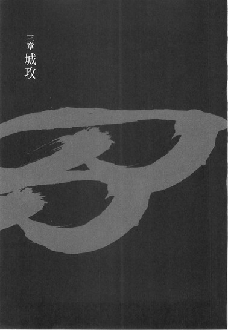
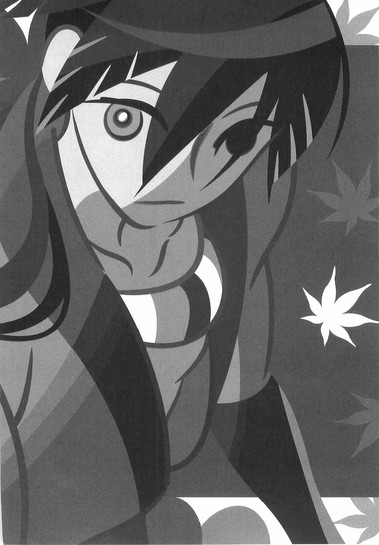
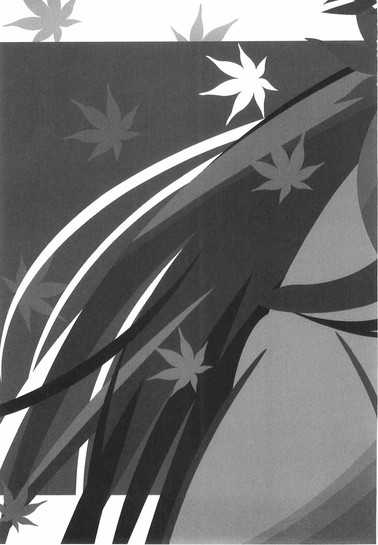
■ ■
余計な修飾をせず、左右田右衛門左衛門が天守閣にまで届けた情報を、そのまま記そう。
先述の通り、尾張城の守りは非常に強固だ。
その門構えは巨大にして重厚、たとえ軍隊がやってきたところで、そうそう簡単には突破できるものではない。長槍を帯びた門兵が、すべての門にふたりずつ配置されているが、それはあくまでも形式的なものとさえ言えた。
そして、中でも防御の堅い正面表門に──
その男はふらりと現れたのだった。
背の高い男である。
筋肉質で、引き締まった身体。
ぼさぼさの髪の毛──下半身ははかま。
上半身は、むき出しのはだかの上に──絢爛豪華な、十二単衣を二重に重ねたような女物の衣装を羽織っていた。
両手はだらりと下げている。
何の武器も備えていない。
刀を──持っていない。
門兵も──だからまさか、この男が『侵入者』であるとは、最初、まったく思わなかったらしい。尾張にはともかく、京の都あたりにはよくいるかぶき者気取りだと、そんな風にのみ思ったと言う──いや、ともすれば見逃してしまいそうなほどに、男は自然な足取りで、堀にかかった橋を渡って、門へと近付いてきたのだった。
さすがに男が門の前に立ち止まった時点で、ふたりの門兵は槍先を彼へと突きつけ、
「おい、きさま、何をしている──」
などとお決まりの文句を述べたが。
次に気付いたときには──槍は折られ、彼らの身体は、吹っ飛ばされていた。ひとりは堀の下にまで落ち──もうひとりは、ぎりぎりで橋の欄干に引っかかった。
何をされたのかはわからない。
しかし何かをされたようだった。
それでも──ことそこに至っても、門兵は、まさかこの男が城内に侵入できるとは思っていなかった。
所詮門兵などお飾り。
形式的なものに過ぎない。
尾張城の城門を破ることなど、ましてたったひとりの男が破ることなど、できるわけがないのだから──しかし。
男は門の前で構えを取った。
大きな身体を縮込めるように、腰を落とし──身体を思い切りねじって、足を両脚とも横に向けてしまったような、そんな構えだった。
そしてその構えから、
「虚刀流四の奥義──『柳緑花紅』」
と。
そんな風に言って、こぶしを門の中央へと──炸裂させた。
やはり、何をしたのかはわからない。
しかし──確実に、何かをしたようだった。
門そのものには、門兵が予想した通り、傷ひとつつかなかったが、ぎぃい、と、静かに向こう側へと──開かれていったのだから。
あとで判明したことだが──どうしてなのか、門の向こうでかまされていた閂が、このとき、破壊されていたのである。まるで、威力だけが門を貫通し、扉を押さえていた閂を圧し折ったかのように──
「......はーあ」
男はそこまで大それたことをしながら──
退屈そうに。
憂鬱そうに。
ゆっくりと──身体を起こしたのだった。
そして──沈んだ声で。
彼はこう言った。
「ごめんな、とがめ──おれはもう、あんたの命令を、守れそうにないや」
■ ■
「ど──どうして！」
尾張幕府八代将軍家鳴匡網は、左右田右衛門左衛門からの報告に──そんな風に、あからさまに取り乱した。
「一体──何が起こっておるのじゃ！」
あるいは記憶が甦っているのかもしれない。
二十年前、奥州の顔役だった飛騨鷹比等が──幕府に対して牙を剥いたときのことを、思い出しているのかもしれない。
それは──嫌な記憶だろう。
忘れたくても忘れられないような、嫌な記憶だろう。
──だけど。
──今回は、それどころじゃないんだよねえ。
「聞いての通りです、大御所さま。とある曲者が──この尾張城内に侵入しております。既に十名以上の警備兵が彼を目撃しておりますが──未だ捕獲できておりません。返り討ちにあった末──どうやら見失ってしまったようです」
「だ、だからどうしてなのじゃ！ 賊はたったひとりなのであろうが！」
「ひとりと言っても侮ってはいけません──何せ彼は、四季崎記紀の完成形変体刀を実質上ひとりで、十一本まで集めてみせた精鋭なのですから」
「......ひ、ひとりで──！」
匡綱は──戦慄したようだった。
彼我木輪廻のことに触れたときに見せた匡綱の態度からすれば、きっと流し読みには違いないとは言え、奇策士が提出した報告書は──彼の下にも、届いているはずなのだ。
ならば彼の戦果は知っているだろう。
どこかで聞いたような名──どころではない。
真庭忍軍十二頭領がひとり、真庭蝙蝠。
かつての一万人斬りの子孫、宇練銀閣。
三途神社の長、千刀流の敦賀迷彩。
剣の申し子にして日本最強、錆白兵。
強大な力を有する海賊船の船長、校倉必。
常軌を逸した怪力一族の子、凍空こなゆき。
天才・鑢七実。
不要湖のがらくた王女、日和号。
王道を行く活人剣の使い手、汽口慚愧。
見る者によって姿を変える仙人、彼我木輪廻。
そして真庭忍軍十二頭領がひとり──真庭鳳凰。
その全員から──刀を蒐集している。
それに──そもそも。
虚刀流の恐ろしさは、匡綱はよく知っているはずなのだ。
何故なら、先代の鑢六枝は──大乱の英雄と呼ばれていて、言うなれば、家鳴匡網の命の恩人のような存在でもあるのだから──
──まあ。
──それについちゃ、忘れちゃってるのかもしれないけどねえ。
命の恩人であれなんであれ、一兵卒のことなど、『大御所さま』にとっては──所詮、下々の話だろう。
「し──しかし、この尾張城内に、一体どれほどの数の警備兵がいると思っておる──千人以上おるのじゃぞ！虚刀流はそのすべてを突破すると、そのほうはそう言うのか！」
「そうです」
と、応えたのは、否定姫ではなく、天井裏の左右田右衛門左衛門である。
「残念ながら──こちらが何兆人いようと、虚刀流には何の関係もないでしょう」
「口が過ぎるわよ、右衛門左衛門」
否定姫は腹心の言葉を受けて、一応はそう窘めて。
しかし、「でも、その通りね」と、あっさり頷いた。
「こちらが千人でも一万人でも、関係ありません──大御所さま。何故なら、あちらがひとりだからです」
「ど──どういう意味じゃ」
「本城の警備兵を軽んじるつもりは毛頭ありませんが──基本的に彼らは集団で戦う者です。しかし──集団でひとりを相手にするというのは、これが意外と難しい」
「............」
「一対多数の状況。あるいは多数対多数の状況。そんな状況に対する身構えは、あるいは覚悟さえ決まれば簡単なものかもしれません──しかし、多数でひとりを相手にするというのは、あれで案外難しいものなのですよ」
否定姫は言った。
まるで侵入者を評価するかのような口調で。
「侵入者がひとりであること──これは我々にとって最悪です」
もちろん。
そのひとりが虚刀流七代目当主であることも──最悪だった。
──ああ、そう言えば──鑢六枝も、二十年前に城攻めをやってみせたんだっけ？
飛騨城と尾張城とでは規模が違うけれど。
それでも──血は争えないということか。
「じゃ、じゃが──何故じゃ！ 何故虚刀流が、余の城を破壊する！虚刀流は──そのほうの部下なのではなかったのか!?」
「わたしの部下と言えるのは、この世に左右田右衛門左衛門ひとりですよ。特に鑢七花は、奇策士の直轄ですからね」
「き、奇策士──ならば即刻その奇策士を呼べ──虚刀流を止めるように命令するのじゃ！」
「生憎、彼女は──刀集めの途上で落命しましたゆえ」
「なっ......!?」
「あれ、言ってませんでしたっけ？」
とぼけるように──否定姫は笑う。
「まあ、あるじを失った従僕が乱心した──という運びのようですね。しかし大御所さま。これはわたし達にとって最悪ではありながら、同時に幸運とも言えるかもしれません」
「ど──どうして」
「彼こそが、四季崎記紀の目論見を、わたし達の悲願を達成するための、最後の鍵だからです。つまり、完了形変体刀の──」
「か、完了形──変体刀？」
突然出てきた言葉に、戸惑ったような匡綱の声だった。
構わずに否定姫は続ける。
「ええ。もちろん予想外のことではありますが、この状況こそ──わたし達の望むところなのです」
「............」
「変体刀を千本集めたところで、こういうことが起きる──というのが、どうやら四季崎記紀の目論見であったようですね。大御所さま。そして無事にことが成れば──家鳴将軍家の天下は磐石のものとなるわけでございます。千年の繁栄を──約束されるわけでございます」
否定姫にしてみれば、それはついでのように付け加えた言葉だったが──しかし、その台詞は、どうやら匡綱に冷静さを取り戻させるには十分だったようである。
強欲なことだ。
まあ、わかりやすくていい。
騙しやすくて──いい。
「つ、つまり──乱心したらしい虚刀流を返り討ちにすればよいのじゃな。り、理屈はよくわからぬが、そうすればそのほうらの目論見は達成されるというわけなのじゃな？」
「ええ。そう考えれば、虚刀流がこの時機で謀反を起こしたことは、必然の流れとも言えましょう」
飛騨鷹比等の娘であった奇策士はともかく、鑢七花の処遇に関しては、否定姫は右衛門左衛門の裁量に任せた。
邪魔をするようなら殺せ、くらいの命令だった。
実際には、邪魔させる暇もなく、右衛門左衛門は炎刀『銃』で彼女を処刑したということだったが──こうなると。
──まるであんたはこの状況を読んでいたかのようじゃない。
──それは──元忍者としての本能なのかしら？
そんなことを思う。
まあ、その辺りはあとで問い詰めるとしよう。
それよりも、今は。
「大御所さま──しかし、ただ返り討ちにすればいいというわけでもありません。少しばかり、面倒で厄介な手順を踏む必要がございます」
「ど──どういうものじゃ」
「そうですね──ふむ」
なるほど。
自分にとって好ましくなかった『彼ら』は──ここで、こういう風に使うわけか。
「わたしは四季崎記紀の子孫ではありますが、実を言うと運命などというものは、あまり信じてはいません......、しかしこうなると、何らかの力を感じずにはいられませんね」
「ん？」
「大御所さまと一心同体だというこの場の十一人。それにわたしの腹心である左右田右衛門左衛門を合わせた十二人で──この歴史の、最後の仕上げを行なうと致しましょう」
■ ■
「──ふうっ」
否定姫の推測は的を射ていた。
尾張城へと、まさかの単身、正面表門からの侵入を試みた虚刀流七代目当主、鑢七花は──単身であるからこそ、城内の警備兵達を翻弄していた。
警備兵千人。
と言えど、尾張城内にはそれでもまかないきれないほどの広さがある。
隠れる場所がいくらでもあるのだ。
たったひとりの曲者が正面から這入ってくるような事態など、幕府警備部はそもそも想定していない。鉄砲隊も少なからず抱えてはいるが──しかしそれも、標的を見つけることができなければ、何の意味もない話だ。
もっとも、七花を追っている警備兵達にしてみれば、おかしな話でもあるだろう。
あれほどの巨体の男を、どうして見つけられないのか。
まるでかぶき者のごとく、女物の派手な衣装を羽織った男を、どうして見つけられないのか。
あんな目立つ男を。
目前にしてしまえば、もう記憶に焼きついて離れないような特徴的な男を──どうして見つけられないのか。
不思議で仕方ないに違いない。
だが──それこそが、鑢七花が、この一年で身につけた戦い方だった。
真っ直ぐに、まるで猪のように突進することしか知らなかった野性児が──戦うためではなく勝つために、身につけた戦い方だった。
七花はこれまでに二度、尾張の地を訪れたことがある。
一度目は葉月、二度目は神無月。
が、そのどちらのときも、登城したのは奇策士とがめのみであり、七花はそのとき、とがめの住まう奇策屋敷で待っていただけだ。
だから──城内がどういう構造になっているのか、七花はその目で見ていない。いや、たとえ見ていたところで、その複雑怪奇な構造を理解することはできなかっただろう。
が。
道案内もなく日本国中を旅したことからもわかるよう──あるいは不要湖で日和号を相手にしたときからもわかるよう、とがめは地図を描く能力に長けている。
旅の道中。
一体、どういうつもりだったのか──それは多分、刀集めを終えたあとに必要なことだったからなのだろうが、とがめは図に描いて、七花に尾張城内の構造を教えていた。
平面図はもちろん、立体図も。
もちろん七花の記憶力はとがめと違ってあやふやだ──とがめが描いてくれた見取り図を、完全に記憶しているわけではない。
それでも、城内を逃げ回りながら戦うには──あまりにも十分過ぎた。
防犯上の理由から、警備兵でさえ、自分の持ち場以外は把握していない構造の城内を──七花は自由に、縦横無尽に移動できるのである。
適度に警備兵をあしらって。
適度に物陰で休み。
七花は──戦い続けたのだった。
むろん、いくらより抜きの警備兵とは言え、一年前の戦闘経験皆無の頃の七花ならばいざ知らず──今の戦闘経験豊富な鑢七花の、相手になるわけがないのだった。
「はあっ──はあ、はあ」
呼吸を──整える。
そうは言っても、ひとりでの城攻めはさすがに無理がある。七花は今、物陰に隠れて──しゃがみ込んで、少し長めの休憩を取っていた。
絢爛豪華な羽織。
十二単衣を二重に重ねたような派手な衣装。
とがめの着物に、身を包むようにして──
身体を休めていた。
「......はあ」
──親父が城攻めをしたときは。
──少なかったとは言え、それなりに仲間もいたらしいんだけどな。
「警備兵も含めた戦闘要員が千二百人ほど......詰めてるんだっけ？今まで何人倒したかな......百人くらいはやったと思うんだけど......」
まああと五十人くらいはいけるだろう──と、七花は立ち上がる。
いつだったか。
そう、まだ旅を始めて三ヵ月も経っていない頃だった──出雲の三途神社を訪れたときのことだ。
あそこには千人の巫女がいた。
とがめの交渉が失敗していれば、その千人を相手に戦わなければならなかった──そんな展開もあったことを七花は思い出す。
──とがめのためなら、千人だって何人だって、相手にできるつもりでいたけれど。
──今はちょっと厳しいかな。
──だって今は──
とがめのために動いているのではないのだから。
「......っ！」
背後に気配を感じ──七花はばっ、と、勢いよく振り返った。こんな近距離まで接近を許すなど、やはり疲れている──と思ったが、違った。
そこにいたのは一羽の烏だった。
漆黒の烏。
なんだ、と、瞬間、胸を撫で下ろしかけたが──
「『虚刀流』」
と。
その烏がそう喋ったのを受けて──思わず、身構えてしまった。
「か。烏って喋るのか──いや」
違う、と思う。
烏は喋らない──しかし、それならば。
「『不解』」
烏は──そんな七花に取り合わず、勝手に喋り続けるのだった。
「『よくぞ来た──と言ってやりたいが、わたしとしては理解できないところだから、そんなことは言えないな。折角見逃してやった命だというのに──それをあたら粗末にするとは、奇策士どのも草葉の陰で悲しんでおろう』」
「え──右衛門左衛門？」
声は違うが──独特の喋り方は、間違いなく左右田右衛門左衛門のそれだった。
「『相生忍法──声帯移し。まあ、忍法としては初歩の初歩だが......』」
と、烏は言う。
「『まあ、そんなことはどうでもいい。虚刀流よ──既に一般兵は退かせた。それ以上、無駄な戦いを続ける必要はない』」
「............？」
「『逃げ回る必要もない。一直線に天守閣へと向かえ。わたしも姫さまも──そこで待っている』」
「待っている、だと......？」
「『奇策士どのの仇を討ちに来たのだろう？途上に何人か、一般ではない兵がお前の道を阻むことになるが──それくらい、お前なら突破できると、わたしと姫さまは期待しているぞ。もっとも、それは大御所さまにとっては嬉しからぬ話ではあろうがな──』」
それだけ言って──一方的に。
烏は飛び立っていった。
捕まえようと思えば捕まえることもできたが、それに生産的な意味がないことくらいは七花にもわかる。相生忍法声帯移しとやらがどのような忍法なのかは、これまで散々真庭忍軍を相手にしてきた彼には推測がつくのである。
おそらく言葉通りに──左右田右衛門左衛門は、天守閣にいるのだろう。
そこで七花を待っているのだろう。
否定姫と共に。
一般兵を退かせたというのも、本当に違いない。
「......けど、違うよ」
七花は──物陰からその身体を出し、準備体操でもするかのように背伸びをしてから──派手な衣装を翻して。
退屈そうに、憂鬱そうに。
呟いた。
「おれはとがめの仇を討ちに来たんじゃない──死にに来たんだ」
そして──それも、いつのことだったか。
彼のかつての主人から禁じられていた言葉を、自然な流れで口にする。
「──ああ、面倒だ」
四章 家鳴将軍家御側人十一人衆
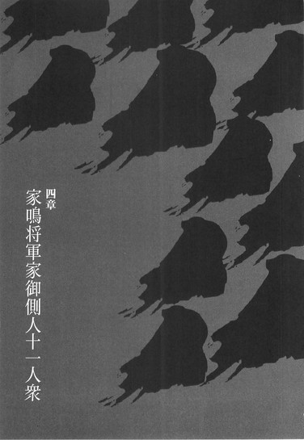
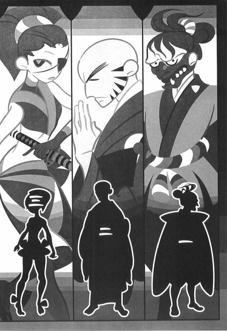
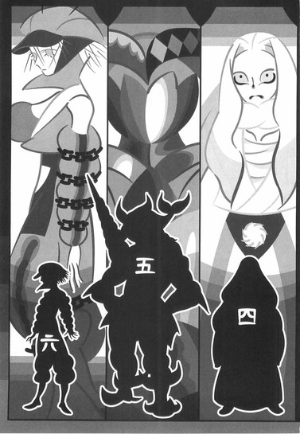
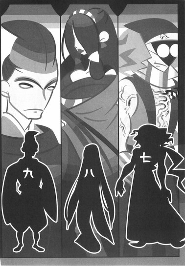
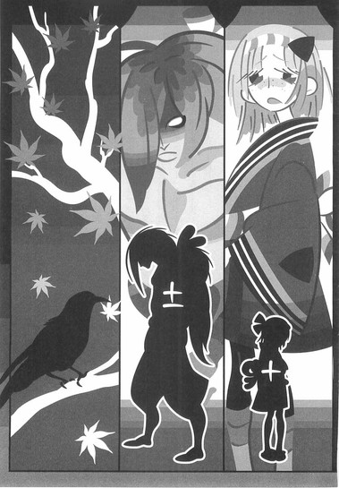
■ ■
天守閣に向かうための一番目の部屋。
そこにいた男は──絶刀『鉋』を抜いていた。
否、抜くまでもない──そもそも絶刀『鉋』は、最初から鞘のない刀だった。
絶対の堅さを誇る、折れもせず曲がりもしない、そんな刀。
かつての所有者は真庭忍軍十二頭領がひとり、『冥途の蝙蝠』、真庭蝙蝠。
七花が一番目に戦った変体刀所有者。
「──家鳴将軍家御側人十一人衆がひとり、般若丸」
妙に目つきの鋭い──前髪を不揃いに垂らしたその男は、そんな風に名乗って、絶刀『鉋』の切っ先を、七花へと向けた。
「............」
七花は、その切っ先を、少しだけ懐かしく思いながら見──それからその男、般若丸に対して、こう言った。
「ここまでの道中は、まだ手加減する余裕があったからな──兵隊のひとりも殺さずに来られたけれど、ここから先はそうはいかないぜ。あんたがどれほどの腕前なのかは知らないし、どうでもいいが──使う刀が四季崎記紀の完成形変体刀となれば、おれとしても手加減のしようがねえ」
「──余裕じゃないか」
般若丸は口元を歪めて──それこそ、余裕そうに笑う。
「知ってるんだぜ──虚刀流。他の刀はいざ知らず、お前はこの刀に対してだけは、刀として勝ったわけじゃない。ほとんど、対戦相手だった真庭蝙蝠の自滅のような形で、勝利を収めたに過ぎない──お前はこの刀を折ることも曲げることも、まして傷つけることも適わなかった。そうだろう？」
「............」
「大御所さまが、それにあの否定姫とかいう怪しい女が何を考えているのか知らないが──しかし、一般兵を退かせた判断は正解だぜ。何故かって？そりゃあ──」
お前程度！
このおれ一人で十分だからだよ！ ──と。
そう雄叫びを上げながら──般若丸は七花へと、問答無用に飛び掛かってきた。
さほど広い部屋ではない。
逃げることも避けることも適わない。
「──報復絶刀！」
そんな気勢と共に突き出された刀に──七花は、かつてその刀を相手取ったときと同じように、虚刀流の技をかける。
「虚刀流、『菊』──」
自らの背骨を支点に、刀に対して関節技を掛けるという、虚刀流の技──方向から何から、すべてが真庭蝙蝠を相手にしたときと同じだった。
違ったのは。
絶刀『鉋』が根元から、ぱきん、と音を立てて──圧し折れてしまったことくらいだ。
分厚い刀身が──まるで枯れた枝のごとく。
いい音を立てて、折れてしまったことくらいだ。
「え......えええ？」
驚愕の表情を浮かべる般若丸。
それに対し、七花は、
「どんな名刀も、持ち主次第ではただのなまくらか──前言撤回するぜ。四季崎記紀の刀も、持ち主次第ではまるで怖くない」
と言い捨てた。
「............っ」
「だけど、悪いな──もう手加減が間に合わない」
虚刀流『菊』から、そのまま連係で接続される技は──容赦なく、虚刀流最終奥義『七花八裂（改）』だった。
般若丸にそれを防ぐすべなどあるわけもない。
まして──そもそも虚刀流『菊』とは、ただ刀を折るための技ではなく、この世でもっとも堅い刀、つまりは絶刀『鉋』を折るためだけに、初代の鑢一根が、四季崎記紀と共に編み出した技であったことなど──不承島で絶刀『鉋』が折れなかったのは、あくまでも七花がまだ戦闘経験皆無で、未熟であったゆえであることなど、知るすべもなかった。
「──一本目」
■ ■
天守閣に向かうための二番目の部屋。
そこにいた男は──斬刀『鈍』を腰に差していた。
世界に存在するどんなものであろうと、一刀両断にしてしまうという、この世でもっとも鋭利な刀。
かつての所有者は、下酷城城主にして居合いの達人、宇練銀閣。
七花が二番目に戦った変体刀所有者。
「──家鳴将軍家御側人十一人衆がひとり、鬼宿不埒」
坊主頭に髭面、僧形のその男は、そんな風に名乗りを上げて──身体を低く構えて、刀の柄に右手を掛け、抜きの姿勢を取った。
「斬刀『鈍』か」
七花は、そう呟いて──男、鬼宿不埒の顔を見るのではなく、ただ刀のみを見て、感慨深げに言うのだった。
「おれがまだ、戦うことしか考えてなかった頃に戦った刀だな──そうそう、おれは結局、その刀の刀身を目にしてなかったんだ」
「......そして二度と、目にすることはない」
不埒は──静かに言う。
彼は目を閉じていた。
それは──まるで、宇練銀閣の絶対領域を模しているかのように、部屋の中央に陣取ったまま、動こうとしない。
自分からは固く、動こうとしない。
とは言え、この部屋はそれなりの広さがあるので、あのような絶対領域は使えないだろうが──その代わり天井は高く、宇練銀閣を屠った七の奥義『落花狼籍』は、あのときのような形では使えそうにない。
が──もとより七花に、そのつもりはなかった。
普通に、ごく普通に──鬼宿不埒の間合いへと這入っていく。
「......教えておくが、ここに来るまでに、わしは既に五人の人間をこの刀で斬っておる。それがどういうことかわかるか？」
七花の身体が間合いに這入ったのを見て取って。
不埒は一息に、刀を引き抜く──
「つまり、『斬刀狩り』の条件が整っているということよ──わしの刀は今、音速を超える！」
「教えてもらわなくても知ってるよ」
七花が、つまらなそうにそう言ったのは──引き抜かれたその刀を、白刃取りに受けて後のことである。
「え......なっ！」
「何でも斬れる刀っつっても、側面まで斬れるわけじゃないだろ──ちなみに無刀と言えばまず連想される真剣白刃取りだが、これは虚刀流の技としては名前がない。つまりそれほどに当たり前の技術で──あんたの居合いはそれほどに取るに足りないということだ」
「う......うあっ」
「だが、ひとつの失敗が致命傷へと繋がるこの刀もまた──手加減する余裕がない。悪いが、あんたにも手加減抜きでいかせてもらうぜ──」
そして──繰り出されるは、三の奥義『百花繚乱』。
両手が刀で塞がれていても発動できる奥義──鬼宿不埒を絶命させるには、十分過ぎる奥義だった。
その場に倒れ伏した不埒を尻目に、七花は斬刀『鈍』を矯めつ眇めつ検分する──しかし刃文も何も、七花の知識ではわかりようもない。
だから。
「思ったほどでもなかったな」
なんか普通。
と、それだけ言って、七花はその刀身を、力ずくでふたつに折った。
一刀両断専用のその刀を、両断した。
そしてその場に、それが何の価値もない、酷くつまらないものであるかのように捨て置いて──次の間へと向かうのだった。
「──二本目」
■ ■
天守閣に向かうための三番目の部屋。
そこにいた女は──千刀『ツルギ』を構えていた。
本人が左右の手にそれぞれ一本ずつ持って。
残りの九百九十八本は──部屋中に、床に、壁に、天井に──気が遠くなるほどに隙間なく突き刺さった状態になっていた。
大広間だからこそ、室内でも可能な陣形である。
取り替えが幾らでもきく、究極の消耗品としての刀──千本の刀。
かつての所有者は三途神社の長にして千刀流の使い手、敦賀迷彩。
七花が三番目に戦った完成形変体刀の所有者。
「家鳴将軍家御側人十一人衆がひとり──巴暁」
片目に眼帯をかけたその女はそう名乗って──二刀を前後に構える。
「......とがめの報告書も、あながち嘘ばっか書いてたってわけでもなかったんだな」
七花は少し呆れたように、大広間を埋め尽くさんばかりの千本の刀を見渡して、嘆息してからそう言った。
「しかし、それもよかれあしかれだ──こんな風に猿真似ばっかしたところで、おれに通じるわけがない」
「それはどうかしら？」
巴は七花の言葉を鼻で笑う。
「そもそもあんた、敦賀迷彩の使ってた千刀流の由来って知ってるの？」
「──いや、詳しく聞いてはいないが」
「あれは結構、由緒正しき剣法でね──そんな有名ってわけじゃないけれど、でも、使い手が皆無というわけではないのよ」
「......何の話だ？」
「あたしは──千刀流を使えると言っているの」
言いながら──巴はにじり寄ってくる。
さりげなく間合いを詰めてくる。
「つまりあたしは！ この千刀『ツルギ』の使い手として相応しいということよ──そして！」
咆哮しながら、ひゅん──と、巴は七花に刀を投げつけた。
七花がその刀をかわすのを受け、既に畳に刺さっていた一本を引き抜き、再び二刀となった巴は──すかさず、七花の間合いへと這入った。
「──千刀巡りを、付け焼刃ではない完全なものとして使えるということよ！」
「それがどうした」
投げられた刀をかわした七花は──かわした方向へと戻るのではなく、そのまま身体ごと一回転し──そして振り下ろされる二本の刀の隙間を縫うようにして、裏拳を巴の胸元へと決めた。
「ぐっ......」
呻く巴に──七花は畳み掛ける。
「おれが迷彩のことが苦手だったのは──苦戦したのは、あいつの性格が苦手だったからだよ。思いつく限りの策を遠慮忌憚なく弄してくる、あの戦いかたが苦手だったんだ。冷静になって考えてみりゃ、刀の多さなんて関係なかった」
「............っ」
当然。
畳み掛けるのは、言葉の上だけのことではない。
かつて敦賀迷彩を相手にしたときと同じように虚刀流最速の技、虚刀流一の奥義『鏡花水月』を決め技に持ってきたのは──七花なりの、彼女に対する礼儀と言ったところか。
その際──巻き添えで、巴の持っていた刀が互いにぶつかりあって、うち一本に大きな罅が入ったのだった。
「いくらでも取り替えがきく消耗品としての刀──しかし、千本のうち一本でも失われちまえば、やっぱり取り返しはつかないよな」
刀に入った罅を見て──七花はそう呟いた。
「──三本目」
■ ■
天守閣に向かうための四番目の部屋。
そこにいた男は──薄刀『針』を構えていた。
刀身はあまりにも薄く、透き通っていて。
硝子細工のように──ぎりぎり視認できるかどうかという、そんな刀。
あまりに軽く。
あまりに脆い。
それが薄刀『針』である。
かつての所有者は日本最強、剣聖の名をほしいままにした若者──錆白兵。
七花が四番目に戦った完成形変体刀の所有者。
「家鳴将軍家御側人十一人衆がひとり──浮義待秋」
総髪の髪をすべて後ろに流したその男はそう名乗って──その美しき刀を下段に構える。
そして浮義は、
「お前に感謝しなければならないな、虚刀流」
と続けた。
「お前が巌流島で倒したという錆白兵は──僕の好敵手だったのさ。互いに技術を高めあった仲だ。友人とは言えなかったが、それでもあいつが幕府にいた頃は、よく一緒に行動したものさ」
「............」
「とは言え、別に仇討ちってわけじゃないぜ──ただ、錆を倒したお前を倒すことで、初めて僕は錆を越えられるのさ」
「......同じことを」
七花は言う。
「同じことを言っておれに挑戦してきた奴が、この一年で二十人はいたぜ──そいつらの名前は忘れちまったが、あんたの名前は憶えてやるよ。浮義だっけ？」
「はっ──ほざけよっ！」
浮義はそこで会話を打ち切って──七花へと特攻してきた。
その速度はあまりに速い。
それはそうだろう──軽過ぎるその刀には、重さというものがないのだから。
いや、それにしたって浮義の足歩は速過ぎる。
これは、かつて七花が巌流島で見た──見せられた、そして見切ることのできなかった錆白兵の移動法──爆縮地！
「──白兎開眼！」
そのまま振り下ろされた刀は、七花の頭を真っ二つにする──はずだったが。
七花の額に弾かれて。
薄刀『針』の刀身は──粉々になった。
「えっ......なんで」
「剣筋をずらさずに、完全な軌跡を描いて刀を振らなければ砕けてしまうほどに脆い刀──もっとも、あんたは錆の好敵手だというだけのことはあって、その程度のことはできたみたいだけれど」
七花はゆっくりと──
もはやのんびりとと言っていいほどにゆっくりと、虚刀流二の構え『水仙』をとった。
「こっちの身体の筋をずらせば──それだけで薄刀『針』の攻撃は防げるんだよ」
これは七花の発案ではなく、とがめが薄刀『針』の現物を見たとき、二秒で気付いたという奇策である。
ただ、これだと刀が砕けてしまって蒐集することが叶わないし、また、この程度の策がかの剣聖に通じるわけもなかっただろうが。
「あんたにゃちっとも、ときめかねえ」
そして七花は──二の奥義『花鳥風月』を、浮義の身体に披露したのだった。
「──四本目」
■ ■
天守閣に向かうための五番目の部屋。
そこにいた男は──賊刀『鎧』を身に纏っていた。
全身銀色の、重厚な鎧──西洋甲冑。全身のあちこちに刃が仕込まれている。七花が巨体だとすれば、その鎧は巨大だった。鎧でありながら──刀。
かつての所有者は薩摩の濁音港を根城にする海賊、鎧海賊団の船長、校倉必。
七花が五番目に戦った完成形変体刀の所有者。
「家鳴将軍家御側人十一人衆がひとり、伊賀甲斐路」
鎧の中に潜み、姿の見えないその男はそう名乗って──七花に対して身をかがめ、体当たりの体勢を取った。
七花は──それを見て、さすがに驚く。
「......その鎧を着られるような人間が、校倉のほかにもいるとは思わなかったぜ」
校倉必は七尺を越える大男だったが、まさかそんな体格の人物が他にも、それも幕府内にいるだなんて──そんなことはとがめも言っていなかった。
「ははは」
甲斐路は笑う。
「まさか、そんなわけがないだろう──名前じゃわからないか？おれは忍法を使って、この鎧を着用しているのさ」
「......伊賀？ ああ、伊賀って言えば──」
つまり──この男は、左右田右衛門左衛門と同じように、元忍者ということなのだろうか。
七花にはそこまではわからない。
ただ──どのようにして賊刀『鎧』を身につけているのかは、わかった。
「これぞ伊賀忍法──筋肉騙し」
「......身体を大きくする技か。蝙蝠あたりの忍法とも通じるものがあるな──しかしまあ、今となっては不思議ってほどじゃない」
「別に不思議がってもらおうとは思っちゃいないさ──ところで、報告書に書いてあったぜ。虚刀流──お前の奥義はこの鎧には通じなかったんだろう？」
「............」
「おれは校倉必とやらのように、鎧の防御力に頼って油断したりはしねえ──捕まる前に、お前の肉体をぶっ貫いてやるぜ！」
しかし。
今回は──七花のほうが先手を取った。
甲斐路がぐだぐだと口上を述べている間に、七の構え『杜若』からの歩法で──一気に甲斐路との距離を詰めていた。
「！」
気付いたときにはもう遅い。
甲斐路は七花に──足払いを食らわされていた。
「肉体を増大させたところで、体重は変わらないんだろう？だったら校倉と違って、こういう風にあんたの体勢を崩すことが簡単にできる──」
「............っ！」
「それにさ......、とがめがずっと、何も考えずにいたと思うのか？おれの奥義が通じない刀を──通じないままにしておくと思うのか？どうして『柳緑花紅』が通じないのかは、実を言うと、もうわかっちゃってんだよ」
報告書には書いてなかっただろうけどな。
と──七花は、足払いを食らわされ空中に浮いたまま、まだ畳の上に倒れる前の甲斐路の身体に──この尾張城の正面表門の閂を破壊した、破壊力透徹の技、虚刀流四の奥義『柳緑花紅』を叩き込んだ。
「要するに賊刀『鎧』って、威力を他へと逃がす刀なんだよな──受けた攻撃の衝撃を、内ではなく外へと逃がす刀なんだよな。だから──鎧のどこかが地面や壁と接していない空中でなら、食らった衝撃はどこへも逃げられず──むしろ鎧の中で爆発する」
そして──その通りになった。
足払いから、畳の上に倒れるまでの間。
たったそれだけの刹那に──鎧の接合部、関節部から──どばあっと、大量の真っ赤な血が流れ出たのだった。
「一旦着ちゃえば、中からでないと開けられない構造なんだっけ？だったら──これで賊刀『鎧』も破壊されたも同然だ」
七花は倒れたまま動かない甲斐路──いや、賊刀『鎧』を見下して、更に次の間へと向かう。
「──五本目」
■ ■
天守閣へ向かうための六番目の部屋。
そこにいた男は──双刀『鎚』を持っていた。
運搬することさえ困難な、すさまじいまでの──落とせば自重によって地面に沈み込むほどの重量を持つ、無骨な石刀。
かつての所有者は壱級災害指定地域、蝦夷の踊山に住んでいた一族の最後の生き残りの少女──凍空こなゆき。
七花が六番目に戦った、完成形変体刀の所有者。
「家鳴将軍家御側人十一人衆がひとり、真庭孑々」
袖を切り落としたしのび装束に、全身に鎖を巻いたその男はそう名乗って──その刀を七花へと向けて、動かしたのだった。
「......すげえな」
七花は素直に、称賛の言葉を漏らした。
「校倉必の体格ほどではないにしても──その刀を持ち上げることのできる人間ってのも、それなりに想定外だった。いや──規格外か。まさかあんた、凍空一族の者か？」
「そんなわけがないでしょう」
そんな風に──孑々は首を振る。
「僕は──出自を辿れば真庭忍軍の者ですよ」
「ん......」
そう言えば真庭と名乗っていた。
さっきは伊賀で──今度は真庭か。
意外と、幕府としのび衆の繋がりというのは強いらしい。
「もっとも、二百年以上前に、僕のご先祖さまは真庭忍軍から離反し──現将軍家にのみ忠誠を誓ったのですがね」
「裏切り者の裏切り者か。金のためにしか動かない真庭忍軍に嫌気がさしたってわけか？」
「さあ？ 裏切ったのは僕ではなく僕のご先祖さまですからね──しかし確かなのは、あなたがこれまで倒してきたような真庭忍軍の頭領達と、この僕とを同じように思ってもらっては困るということですよ」
「そうやって──双刀『鎚』を平気そうに持っているのも、真庭忍法なんだな」
「ええ。真庭忍法──足軽です」
「............」
ああ、姉ちゃんが使っていたあれか、と七花は思い出す。
ん？ いや、ということは──
「まあ、結果としてあんな連中の無念を晴らしてしまうことになるのは心外ですが──これも話の流れって奴ですかね──！」
この世でもっとも重き刀、双刀『鎚』。
それを、まるで対極にある刀、薄刀『針』のように扱って──振り回してくる孑々。距離が詰まったところで刀を持ち替えて──
「双刀之犬！」
と、七花の顔面に向けて打突を食らわそうとしたが──しかし、七花はその刀を、特に何ということもなく、受け止めた。
「え......っ、あれ？」
「忍法足軽って......重さを消す技だろ？」
七花は言う。
「重さがなくなったら、この刀に何の意味があるんだよ」
重量を打撃力に変換するからこその──双刀『鎚』である。
「し、しまった──」
「おれも真庭忍軍の十二頭領、全員と会ったわけじゃねえけどよ──あんたより弱いって奴は、さすがにいなかったよ」
そう言って──七花は双刀『鎚』を、孑々との楔としながら、彼の身体に掌底を打ち込む。
一の奥義──『鏡花水月』。
その際、楔とした双刀『鎚』も破壊された。
重さの失われたその刀は、七花にとってはただの石のかたまりのようなものだった。
「──六本目」
■ ■
天守閣へ向かうための七番目の部屋。
そこにいた男は──心臓に悪刀『鐚』を刺していた。
常に雷を帯び、電極のように身体に差し込むことによって、疲弊することも疲労することもなく、ただただ戦い続けることのできる不死身の兵隊を作りだす、くないのような形をした、そんな刀。
かつての所有者は七花の姉にして鑢家家長、そしてありとあらゆるすべての才能を有した天才、鑢七実。
七花が七番目に戦った、完成形変体刀の所有者。
「家鳴将軍家御側人十一人衆がひとり、胡乱」
奇抜な意匠の西洋眼鏡をかけたその男は、おそらくは悪刀『鐚』の効果なのだろう、身体中に血管を浮かせながらそう名乗って──拳法の構えを取って、七花に対した。
「この悪刀『鐚』を以前に使用していたのはきさまの姉だそうだが──病弱だったというきさまの姉が使うのと、おれのような健康優良な戦士が使うのとでは意味が違うぞ。同じ『悪刀七実』であろうと、その実体はまるで違う意味合いだ。覚悟を決めるのだな──虚刀流だか完了形変体刀だか知らんが、ここがきさまの死に場所だ」
「確かに、あんたを倒すのには少しばかり苦労しそうだ」
胡乱の言葉に、七花はそう応じる。
「仕方がないから──病弱だったおれの姉ちゃんの真似でもさせてもらおう」
「あん？」
「体力が尽きないからと言って──不死身だからと言って」
虚を突くように、七花は言葉の途中で素早く動き──胡乱の右側へと回り込んだ。
そして。
「殺して死なないからと言って──殺し続けて死なないわけじゃないだろう」
「なっ......」
「虚刀流──『雛罌粟』から『沈丁花』まで、打撃技混成接続」
いつか、清涼院護剣寺において、七実が七花にしたように──七花は胡乱の肉体に、不死身を有したその肉体に、二百七十二種類の打撃を、あらゆる方向から打ち込んだ。
むろん、七実と違って忍法足軽を使えない七花の打撃は、手加減抜き、どれもこれも──非常に重いものである。
結果、胡乱は二百七十二回死んで。
最後の最後に──悪刀『鐚』は、その刀内に保有した雷をすべて使い尽くし、ただの搾り取られた抜け殻となり、ずるりと胡乱の心臓から抜け落ちた。
「もっとも凶悪な刀、か──確かに、あんたの死に様は、おれが今まで見たものの中でもっとも拷問に近い、凶悪なものだったな」
七花は胡乱の骸に対して、心底からそう言うのだった。
「──七本目」
■ ■
天守閣へ向かうための八番目の部屋。
そこにいた女は、微刀『釵』──即ち日和号と近距離に並んで、七花を待ち構えていた。
人形を模した──人を模した刀、微刀『釵』。四本腕に四本脚、半永久的に動き続けることのできる仕組みの──自律的な刀。
かつての所有者は刀自体である日和号。
七花が八番目に戦った完成形変体刀の所有者。
「家鳴将軍家御側人十一人衆がひとり、灰賀欧」
豊かな髪を左右に振り分けたその女は、そう名乗って──日和号と共に、七花にじりじりと、にじり寄ってきた。
「言っておくけど、日和号の設定は既に変えてあるわよ──不要湖にいた頃の日和号とは違って、人間ならば誰でも斬殺するような危うさはもうない。今はわたしの命令に服従するだけの可愛いお人形さん──ちなみに今組み込まれている命令は、あんたを殺せという、それだけのことよ」
「......そっか」
七花は灰賀の言葉を聞いて、逆に、安心したように──頷いた。
灰賀がいぶかしげにそんな七花を見たので、
「いや、日和号にはおれとしても色々と感じるところが多かったからさ──ぶち壊すのにはちょっと抵抗があったんだが、そんな風に頭ん中いじくられているんなら、こっちにも迷いがなくなると思ってさ」
と、彼は説明した。
親切な説明ではあったが。
その上からの発言は、灰賀を激昂させるには十分だった。
「虚刀流、あんた、わかってんの──二対一なのよ！二対一、二対一、二対一！四本の腕、四本の脚を相手取るだけでも苦労してたあんたが──どうやって六本の腕と六本の脚を相手にするのよ！」
左右から──同時に、灰賀と日和号は、七花へと襲い掛かってきた。
灰賀は両手に、鉤爪のような武器を備えていた。
日和号は既に畳から浮き上がっている。
「微刀・釵」
そう、それは日和号の最終形態──
「人形殺法・微風東風──」
「......虚刀洗最終奥義──七花八裂、応用編」
ここで七花は。
七つの奥義を同時に発動させるこの技を、左右両側に対して行使した。
奥義のうち四つまでを日和号に。
残りの三つを灰賀欧に対して行使した。
「がっ......！」
日和号は──胴体部を砕かれながら漆喰の壁へと激突し、灰賀もまた、反対側の壁で、日和号と同じような目に遭った。
「か......か、か」
食らった奥義がひとつ少なかった分、灰賀の受けた衝撃は比較的軽かったのか──それは運の悪いことだったかもしれないが、致命傷を負いはしたものの即死には至らなかったようで、灰賀は、血の混じった声でひとりごちる。
「どうして......に、二対一なのに......日和号を一台相手にしたときでさえ、あんたは相当に苦戦したはずなのに......」
「いや、あのときは日和号を蒐集することが目的だったしな......それに今回は」
七花はつれなく、言い捨てる。
「あんたが邪魔で、日和号が実力を発揮できなかったみたいだから」
「............っ」
「まあこれで」
それでも。
なんとなく、日和号の残骸に、申し訳なさそうな視線を向けてから──七花はこの部屋を後にするのだった。
「──八本目」
■ ■
天守閣へ向かうための九番目の部屋。
そこにいた男は、王刀『鋸』を、既に大上段に構えた姿勢で──七花を迎え入れた。
流れるような木目の木刀──斬れもせず、さして丈夫でもない、ただの木刀。しかしその効果は所有者の精神に作用する。持ち主の精神を律する、そんな不思議な刀。
かつての所有者は、心王一鞘流十二代目当主、汽口慚愧。
七花が九番目に戦った完成形変体刀の所有者。
「家鳴将軍家御側人十一人衆がひとり、墨ヶ丘黒母」
まるで何かに怒っているかのような、厳しい表情をしたその男は大上段に王刀『鋸』を構えたままでそう名乗って──七花へと語りかけてきた。
「虚刀流──いや、名で呼ばせてもらおう。鑢七花よ」
「............」
「このような戦いに意味があるとは思えない。今すぐに投降するというのならば、わたしが口を利いてやらんでもない」
沈黙して応えない七花に──墨ヶ丘は続ける。
「王刀楽土、と言うのだろう？この刀を手にした途端、酷く穏やかな気持ちになった。尾張一の獰猛者として知られたこのわたしが、お前を見逃してやってもいいと思うほどにな──どうだ、鑢七花。わたしの提案に乗る気はあるか」
「ねえよ」
「そうか。ならば──せめて一撃で殺してやる！」
ためらいなく喉を突きにきた墨ヶ丘と──七花の身体が交錯する。王刀『鋸』の剣先は、七花の髪をかすめはしたものの──七花は見事、その一撃をかわし切った。
そして。
「虚刀流六の奥義──『錦上添花』！」
容赦なくその技は墨ヶ丘の身体へと炸裂し──王刀『鋸』もまた、文字通り木っ端微塵になったのだった。
「悪いけどさ......汽口のそれと違って、あんたの言葉、上っ面ばっかりで、全然心を打たねえよ」
て言うかむしろ、ただ単にむかつく、と。
七花は着地して、振り向きもせずに言う。
「結局、毒が抜けたところでそれに代わる中身がなきゃ、すっからかんの人間はすっからかんのままってことか。勉強になるな」
ともかく、と立ち上がる七花。
かすられた髪を、少しだけ気にして。
「──九本目」
■ ■
天守閣に向かうための十番目の部屋。
そこにいた女は、這入ってきた七花のほうを向いてはおらず、手の内につかんだ柄──つまりは誠刀『銓』をじっと見ていた。
柄と鍔のみ、刀身のない刀──刀らしからぬ形状のものも多くある千本の変体刀の中でも、唯一、刃さえも持たない、刀ではない刀。
かつての所有者は、見る者によって姿を変える、三百年生きた仙人、彼我木輪廻。
七花が十番目に戦った完成形変体刀の所有者。
「家鳴将軍家御側人十一人衆がひとり、皿場工舎」
額に鉢巻を巻いて法被という、動き易そうな格好をしたその女はそう名乗って──七花のほうを見ないままに、続けて、
「ねえ──これってあたし、どうするべきだと思いますか？」
と、問いかけてきた。
「さすがにこれ、どうしようもないんですけれど......いや、あなたにわかりますか？こんなけったいなもん渡されて戦いに行けと言われたあたしの気持ちが。いくらなんでも忠誠心が尽きますって」
「......誠刀防衛って言って、前の所有者は、戦闘そのものを放棄して逃げ回ってたけど」
「さすがにそういうわけにはいきませんね......」
「とりあえず、投げて使えば？」
「あなたの助言を素直に聞きいれるのもどうかと思いますけれど......ほかに方法もなさそうなので、そうさせてもらいます」
言われた通りに。
皿場はその柄──誠刀『銓』を、七花に向かって投げつけてきた。
足で蹴り上げて、七花はそれを天井へと跳ね飛ばす──それだけのことで誠刀『銓』は簡単に破壊されてしまった。
続けて懐へと飛び込んできた皿場へと、連撃で七花は、
「虚刀流五の奥義──飛花落葉！」
──を、食らわせた。
不幸過ぎます、と悲鳴の代わりに呟いて、その場に崩れ落ちる皿場。
ただし、刃物を向けられていないゆえに手加減をする余裕があったので、繰り出す奥義に比較的殺傷能力の低い『飛花落葉』を選べたことだし、運がよければ命だけは助かるだろうというのが、七花の見立てだった。
あるいはこれも誠刀『銓』の効果だろうか？
不愉快な性格の仙人を思い出しながら──七花はそんなことを考えたりした。
そしていよいよ。
「──十本目」
■ ■
天守閣に向かうための十一番目の部屋。
そこにいた男は、毒刀『鍍』を構えていた。
所有すると人を斬ってみたくなるという四季崎記紀の作りし変体刀千本の中で、最も強き毒を有する黒き刀。
かつての所有者は真庭忍軍十二頭領がひとり、『神の鳳凰』、真庭鳳凰。
七花が十一番目に戦った完成形変体刀の所有者。
「家鳴将軍家御側人十一人衆がひとり、呂桐番外」
恰幅のよい体格をしたその男は、うつろな目で、うつろな声で、うつろな態度でそう名乗って──ふらふらと揺れる切っ先を、七花のほうへと向けようと──しているようだった。
「ろ......ろぎり。ろぎり番外、ろぎり、ろぎり......しきざき？しき......ろぎり、ろぎり、ろぎり、しき......しきざ、しきざき」
「......ふうん」
そんな呂桐を、七花は冷めた態度で観察する。
「なるほど......やっぱり毒刀『鍍』と言えど、持った人間すべてに、四季崎記紀の人格が憑依するってわけじゃないんだな。猛毒刀与と言うだけあって、おかしくはなっちまってるようだが......」
「ろぎり。しきざき？ しき崎、しき、しき、ろぎり、呂桐、四季ざき、し季崎、四き崎、四きざき、きき、きき、ろぎり、ろぎり、ろぎり、ろぎり、ろぎり──しきざき。しきざききき。四季崎きき。しき崎き紀」
「またあの刀鍛冶に会う羽目になったらどうしようかと思っていたが──その心配がなくなってほっとしたよ。......待ってな。すぐに楽にしてやるから──こんなくだらない刀同士の争いから、解放してやるからさ」
呂桐番外。
七花は聞いたばかりの相手の名前を呼びかけてから──ふらふらとふらついたままの呂桐番外のところへと、突っ込んで行った。
そして直前で飛ぶ──そう。
この部屋の天井の高さなら、威力を高めた状態での使用が可能だ。飛び上がって、身体を縦方向へと回転させて、かかとを斧に見立てての蹴撃──
「虚刀流七の奥義──落花狼籍！」
それは──構える位置さえ定まっていなかった毒刀『鍍』の刀身をも巻き込んで、呂桐番外の脳天へと振り下ろされたのだった。
それは同時に、毒刀『鍍』に残滓のように刻まれていた伝説の刀鍛冶、四季崎記紀の人格の完全な消滅を意味していた。
「──十一本目」
■ ■
十一連戦十一連勝。
それもすべての勝負が瞬間で決着。
断っておくが、これは別に、家鳴将軍家御側人十一人衆が戦士として弱かったということではない──そうではなく、ただ単に鑢七花が強いのだ。
虚刀流七代目当主、鑢七花。
日本有数の際物達と、たっぷりと戦闘経験を積んだ上で──
足枷を外された七花が、規格外に強いのだ。
刀集めの旅を始める前。
奇策士とがめは鑢七花にこう命令した。
「刀を傷つけてはならぬ」
蒐集する必要がある以上──四季崎記紀の完成形変体刀に、傷ひとつつけてはならないと、七花はそんな命令を受けていた。
それは虚刀流にとって、そして七花にとって大きな縛りだった。
だが──
その縛りを守る必要は、既にない。
彼のあるじは、もういないのだから。
「ああ......本当に面倒だ」
それが十一連戦を十一連勝で終えての、鑢七花の感想。
そして──
刀の破壊を許された鑢七花の、これが本来の実力だった。
五章 鑢七花
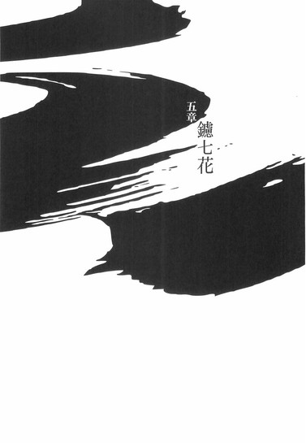
■ ■
天守閣に向かうための最後の部屋。
三番目の部屋と同じくらいの間取りの大広間。
金髪碧眼の女と洋装仮面の男が──鑢七花を待ち構えていた。
否定姫と──左右田右衛門左衛門である。
「早かったわね──七花くん」
開口一番、否定姫はそう言った。
にこやかな笑顔で──七花の労を労う。
「結構びっくりしちゃったわよ、わたしとしたことが──ねえ、右衛門左衛門？」
そんな風に話を否定姫から振られて、すぐ後ろに控えていた右衛門左衛門は、
「ええ」
と頷いた。
「わたしにとっても、この事態は意外以外の何物でもありません」
「あっそ。まあ、人間、たまには驚いたほうがいいわよね──」
考えてみれば。
否定姫と左右田右衛門左衛門──このふたりがこうしてふたりで並んでいる図というのを、七花は初めて見る。
奇策士にとっての虚刀流が否定姫にとっての左右田右衛門左衛門だというのは、最早再認する必要のない認識だが──とがめと七花が常に並んでいたのと対極的に、否定姫と右衛門左衛門は、同じ場所にはいなかった。
部屋と天井裏──というだけではない。
否定姫が尾張の否定屋敷にいる間──右衛門左衛門は全国中を飛び回っていた。話によれば、随分と初期の段階から、七花ととがめを付け回していたとも言うし──
「......って言うか、七花くん。挨拶くらいしたらどうなの？」
否定姫は鉄扇で口元を隠して、そんな的外れなことを言ってきた。
「あの不愉快な女は、部下にその程度の教育もできなかったのかしらね──まったく」
「......天守閣で待ってるって言わなかったか？」
そう言われたからというわけではなかったが、七花は沈黙を破って、口を開いた。
「おれの記憶が確かなら、まだここは──天守閣じゃねえだろ。もう少し先のはずだ」
「否定するわ」
彼女は七花の言葉に、そう応えた。
「右衛門左衛門が声帯移しで七花くんに話しかけた段階じゃ、まだ計画が不確かだったからね──でもまあ、安心して。尾張幕府八代将軍家鳴匡綱さまは、間違いなく天守閣の最上階にいるからさ──別に逃げ出しちゃいないわよ」
「............」
「ってか、逃がしやしないけど」
否定姫はそう言って──踵を返す。
すぐ背後の襖を開けて、自然な動作でその奥にあった階段を昇っていこうとする。右衛門左衛門はそんな否定姫を振り向きもせず、仮面のままで、七花にじっと正対していた。
打ち合わせは済んでいるらしい。
なるほど。
否定姫はとりあえずここでは顔見せをするだけで──この場面での真打ちは、あくまでも左右田右衛門左衛門ただひとりだということらしい。
「その通りよ──七花くん」
否定姫は、後ろ姿のままで、一旦階段を昇る足を止めて、そう言った。
「きみはここで死んじゃうかもしれないからさ──最後にもう一回、顔を見ておこうと思ってね。わたしは、奇策士のことは大嫌いだったけど、きみのことは別に嫌いじゃなかったわよ」
「............」
「まあ、右衛門左衛門を倒すことができたら、この階段を昇ってきなさい──あとはほとんど一直線よ。そこまで来られたら、わたしを殺させてあげる」
「おい、お姫さま。おれは──」
「右衛門左衛門」
七花の台詞を遮るかのように、否定姫はそこで会話の矛先を、おのれの配下、右衛門左衛門へと切り替えた。
「命令してあげる──虚刀流を殺しなさい」
「......もちろん、仰せのままに」
右衛門左衛門は──静かに頷く。
「ただ──わたしが虚刀流を殺してしまうと、四季崎記紀の目論見は達成できないままに終わるということになりますが」
「そうね──だけど、ひょっとしたらあんたはまだ気付いていないかもしれないけれど、わたしって、とても否定的な人間なのよ」
否定姫は──たぶん、笑いながら言った。
「四季崎記紀の悲願を達成したいのと同じくらいに──その悲願がくじけるところも、見てみたいと思うのよ」
「............」
「あんたならそのどちらかを、必ず見せてくれると信じているわ」
そうして──否定姫は再び、階段を昇って行った。丁度その姿が見えなくなったところで、左右田右衛門左衛門が後ろ手に、音もなくその襖を閉めるのだった。
「不面白」
右衛門左衛門は言う。
『不忍』の二文字が記された仮面の下で──低い声で言う。
「前にも言ったよう......、わたしは、いつかお前と対することになるとは思っていたが──まさかこんな形で対することになろうとは思わなかった」
「......こんな形？」
七花は、右衛門左衛門の言葉に引っかかりを覚えて、疑問を挟んだ。
「どういう意味だよ」
「何者かの手のひらの上で踊らされるように──という意味だ。わたしは戦うときは姫さまの意思だけで戦いたい。いくら姫さまの先祖であるとは言っても、四季崎記紀の思惑のままに戦うなど──不愉快至極極まりない」
「......へえ」
否定姫って四季崎記紀の子孫だったのか、と、七花は、驚くよりもまず納得するような気持ちで──頷いた。
そう考えれば納得いくことも多々ある。いや、そうとわかってしまえば──そうでないことのほうが不思議に思えるくらいだった。
しかし──だとすれば、さっき否定姫が言っていた、四季崎記紀の悲願とは何だ？
「お前だってそうだろう？」
と、右衛門左衛門は続けた。
「お前だって、戦うときは奇策士どののためにのみ、戦いたいはずだ──実際、今もお前はそのつもりだろう。たったひとりの女を殺された恨みで──この尾張城に単身乗り込むなどという、大それた真似をしてみせたのだろう。直接の仇であるこのわたし、その命令を下した姫さま、そして奇策士どのにとってのそもそもの仇──家鳴匡綱将軍を討たんとして。それなのに、それが四季崎記紀の手のひらの上だなどと──」
「......だから、どっかずれてんだよな、あんた達って」
「うん？」
予想もしない反応だったのだろう──七花の言葉に、右衛門左衛門は、珍しく、首を傾げるような動作をした。
「違うと言うのか。ならば何故そんな風に、奇策士どのの着物を着ているのだ。それは奇策士どのの意志を──奇策士どのの遺志を継いでいることの、証ではないのか」
七花は退屈そうに──憂鬱そうに。
いっそ不貞腐れたような口調で──言う。
「なんっつーか......やっぱりさ、誰かのために何かをするなんてこと、人間には──刀にも、無理なんじゃないかって、とがめが死んだことで、おれはそう思ったよ」
「............」
「あんたの言う通り、おれは終始一貫して、とがめのために戦おうと思って、実際そうしてきたけれど──最初は覚悟もなくとがめに従って、途中からは覚悟をもってとがめのために従ってきたけどさ......、結局、いつだったか、真庭喰鮫の奴が言ってたことが、真実だったのかもしれない」
何のために戦うか？
そんなことを考えなければならないくらいなら──
そもそも戦わなければいい。
「だってさ、結局のところ、とがめは自分のことしか考えてなかったんだぜ？」
「自分の──こと」
「最後の最後まで、自分勝手にさ──おれに好きに生きろとか言ってさ。本当、わがままでさ──なんて言うんだろうな、ああいうのは。でも、右衛門左衛門。仕方ねえんだよ」
七花は──薄く、遣る瀬無く笑みを浮かべた。
力の無い笑みだった。
「おれはそういうとがめのことを好きになっちゃったんだから」
「............」
「とがめのそういうところが──好きだったんだから。だから──おれもまた、おれのためにだけ、戦ってたんだと思うぜ」
「ならば、おまえは──一体何をしに、この尾張城に乗り込んできたのだ」
「死ぬためだよ」
七花は即答した。
右衛門左衛門の問いに、七花は即答した。
「とがめはおれに生きろと言ったけれど──おれはもう、そんな命令に従う必要はないからな。左右田右衛門左衛門──おれを殺せるのは、あんたをおいて他にいないと考えてるぜ」
とがめを殺した──あんたしか。
そんな七花の言葉を受けて、
「不笑」
と、右衛門左衛門は言った。
「笑えないな──そんな癇癪を起こした子供みたいな理由で、一国の城にまで乗り込んでくるとは......これが四季崎記紀の目論見通りなのだとすれば、確かに滑稽なものだ」
そして──右衛門左衛門は。
懐から、一対の鉄のかたまりを取り出す。
それは七花にとっても見覚えのある──忘れようもない『武器』だった。
かつて見たときには何の共感覚も覚えなかったけれど──今となっては、はっきりと感じる。
その鉄のかたまりが──四季崎記紀の完成形変体刀であることを。
炎刀『銃』であることを。
完成形変体刀──最後の一刀であることを。
「回転式連発拳銃に──自動式連発拳銃」
右衛門左衛門は、左右の刀をそれぞれ示しながら、そんな風に言う。
「四季崎記紀が、現時点においては、生涯最後に作ったとされる刀だ」
「おれを完了させるための──刀だろう？」
「そうか。事情は知っているわけか」
ならば話が早い、と右衛門左衛門。
「なるほど──彼我木輪廻と会ったんだったな。それに......毒刀『鍍』によって、四季崎記紀に憑かれた真庭鳳凰にも──」
「......その炎刀で、真庭忍軍の連中を殺してきたんだな？」
「いや、真庭海亀に関しては違う──が、真庭鴛鴦と真庭人鳥に関してはその通りだな。他の変体刀同様、この時代には本来ない武器だ──しのびであろうがなんであろうが、対応できるはずもない」
「人鳥も......」
とがめの予想通り──ということか。
真庭忍軍はこれで──全滅だ。
その事実に対してどういう感想を抱けばいいのか──七花は自分でもわからなかった。
「不意をつくにはいい武器だ。まあ、人鳥はこれがどういう武器なのか、把握した上で死んでいったのだがな──お前はどうだ？この炎刀の特性は、理解できているか？」
「......死ぬ直前に、とがめが教えてくれたよ。要するに鉄砲みたいなものだって──だけど既存の鉄砲と違うのは、連射性と速射性にあるって」
「さすがだな。あの状況でそこまで読むか──だが、読まれたところで特に問題はないのだがな」
「とがめのずっと後ろのほうに、とがめの腹部を貫通した弾丸が落ちてたぜ。鉄砲の弾丸は丸いって聞いてたけど......むしろちっちゃな筒みたいな形だった」
そのほうが速度が出るんだな、と七花は言った。
「さて、そこでおれは考える──あの大きさの弾丸が、その大きさの鉄のかたまりに、一体どれくらい内蔵されているものか──」
「弾切れを狙おうという気か？」
その発想に──右衛門左衛門は落胆したように、肩を竦めた。
「ならば教えてやろう──こちらの回転式連発拳銃は装弾数六発。こちらの自動式連発拳銃の装弾数は十一発だ。もちろん、奇策士どのに使用した分の弾丸は既に補充済みだ」
「............」
「絶望したか？ 総計十七発の弾丸をかわし切ることなど──できるわけがないからな。連射性と速射性を、炎刀『銃』の特性と読んだ奇策士どのは見事なものだが、わたしとしてはそこにもうひとつ付け加えておきたい──それは精密性だ。この『銃』の命中率は──非常に高い」
「......わかってるさ、そんなこと──それを潜り抜けるための策は、既に練ってある」
「策？」
「奇策だよ」
七花は言って──構えた。
それは虚刀流七の構え──『杜若』。
変幻自在の足運びを実現させる動の構え。
「御託はたくさんだ。始めようぜ、右衛門左衛門──おれは刀で、あんたも刀だろう。ならば言葉はいらないはずだ」
左右田右衛門左衛門。
否定姫の懐刀。
鑢七花。
生まれながらにして一本の日本刀。
刀と刀の──せめぎ合い。
刀と刀で──しのぎを削る。
「不惑」
右衛門左衛門も──七花の構えを受けて、膝を落として腰を屈め、炎刀『銃』の銃口を、七花に向けて構えた。
「わかった──お前程度の知恵で錬った奇策とやらを見せてもらおう」
「ああ、見せてやるとも──ただしその頃には、あんたは八つ裂きになっているだろうけどな」
「一瞬で決着をつけてやろう」
「こちらこそ」
「その重たそうな羽織は取らなくてもいいのか？」
「ああ。これはこのままのほうがいい」
「元相生忍軍所属──現否定姫仕え。尾張幕府家鳴将軍家直轄内部監察所総監督補佐、左右田右衛門左衛門」
「虚刀流七代目当主──鑢七花」
いざ尋常に──はじめ。
そんな風に開始の合図をかけてくれる者は、もういないけれど──それでも、両者はまるで示し合わせたかのように、同時に戦闘を開始した。
変幻自在の足運び。
『杜若』で──鑢七花は、部屋の中を駆け回った。
直接右衛門左衛門の元へ向かうのではなく、それに牽制というわけでもなく、ただただ縦横無尽に自由自在に、部屋の中を飛び回る。
「ふん」
と、右衛門左衛門はそんな七花の動きを──冷ややかに見つめる。
「動く的には当てられないはずだという考えか？正視に耐えない悪足掻きだな──確かに、こちらの弾丸が一発か二発程度ならば、その作戦は有効だろう。しかし装弾数十七発──そのすべての弾丸を避け切ることなどできるわけもない。そんなことは──錆白兵にも鑢七実にも不可能だ」
「姉ちゃんか」
七花は思う。
そう言えば──自分がこれからやろうとしていることは、姉ちゃんあたりが取りそうな作戦だと思う。死を付き合いの長い友人だと言い切った、あの天才の──
「おおおおおおおおおおおおおっ！」
切り替えて。
七花は、時機を見て──右衛門左衛門の方向へと最速の動きで攻め込んだ。
しかし右衛門左衛門は惑わされない。
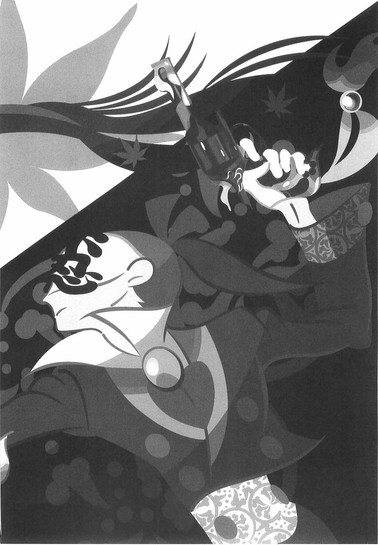
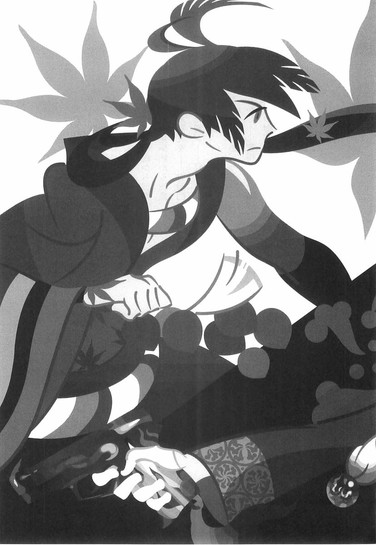
どのような牽制にも動じない。
ただ──そんな七花に、静かに銃口を向けるのみである。
「一度は見逃した命を殺し直すというのは気の重い作業だが──死ににきたというのなら是非もない。悔いを残して死ね、鑢七花。お前は何と言って──死ぬのかな」
ぱん。
ぱんぱんぱんぱんぱんぱん。
回転式連発拳銃から三発。
自動式連発拳銃から四発。
七発の弾丸を──右衛門左衛門は鑢七花の身体へ向けて撃ち込んだ。
乾いた音が──巨大な音が、室内に響く。
反響する。
「な......っ、あ、っ！」
しかし──驚愕の声をあげたのは、右衛門左衛門のほうだった。
拳銃の弾丸を撃ち切った直後──鑢七花は、変幻自在の足運びのままに、右衛門左衛門のすぐ目前、右衛門左衛門のすぐ直前にまで──まさに懐にまで、這入ってきていたからだ。
そこで──四の構え『朝顔』。
『朝顔』を取っている。
その姿勢から発動される奥義は『柳緑花紅』──いや、『柳緑花紅』から更に六つの奥義を繋ぐ、『七花八裂（改）』──それを。
発動するに、最適の位置。
「ば──馬鹿な。きょ、虚刀流。あれだけの弾丸を──どうやってかわしたというのだ」
「かわしてないよ」
七花は。
はっきりと──そう言ってのけた。
「多分、半分ほど──食らった」
「............っ！」
右衛門左衛門は絶句しながらも──どうやら、理解したようだった。
そう。
そのための──『杜若』だった。
狙いをつけさせないためではない──弾丸をかわそうとしたのではない。ただ七花は、発射される弾丸を散らそうとしたのだ。
連射性と速射性──それに精密性。
そのすべてが仇となった。
避けられないように、まるで網を投げるかのように、単純な射線ではない面の攻撃を、右衛門左衛門はしたつもりだったが──それこそが、七花の思う通りだったのだ。
実際には、七花は避けるつもりなどなかった。
最少限の弾丸──とさえも言わず、食らうべき弾丸は最初から食らうつもりで、右衛門左衛門の間合いに這入ってきたのだった。
そして──この超近距離。
近過ぎる。
この距離では炎刀『銃』が使えない。
弾丸はまだ半分以上残っているとは言え、炎刀『銃』はこんな超近距離で戦えるような武器ではない──いくら小型で携帯性に富んでいるとは言え、そもそもが飛び道具なのだ！
しかも、同時にこの距離は──武器を持たない虚刀流の距離だった！
もしも虚刀流が何らかの武器を──たとえば平均的な日本刀を持っていたとすれば、その武器を振るうための距離が、必然、生じることになる。
そしてその距離があれば──炎刀『銃』で対応できたはずなのだ。
遠距離にも近距離にも長距離にも短距離にも対応できるはずの炎刀『銃』──しかし、武器を持たない無刀の虚刀流だからこそ！
この超近距離で──その刀を封じる！
「だ、だが──それでも、少なくとも三発の弾丸はお前を貫いたはずだ！」
「四発だよ」
七花は俯いたまま、答える。
「脚に一発、腹に二発──それに、腕にも一発食らってる」
「ならば──それで──どうして動けるのだ！」
「最初から食らうつもりで──覚悟を決めてたからな」
覚悟。
今の七花が、その言葉をこういう風に口にしていいことなのかどうか、それはわからないけれど。
「避けられない攻撃ならば食らえばいい。それだけのことだ。避けるつもりなんか......最初からなかった」
「............っ！」
「おれはとがめに命令されていた──おれ自身を守れと」
刀を傷つけるなと。
そう命令されていたように。
とがめを守れと。
そう命令されていたように。
かすり傷ひとつ負うことは許さないと──そう言われていた。
しかし。
既にその命令を守る必要はない──どこにもない！
刀の破壊を許された、そして自ら傷つくことを許された鑢七花の、これが本来の実力──！
「うっ......」
いつか右衛門左衛門は、虚刀流の真髄は防御力にこそあると、否定姫に報告した──しかしそれは正しくありながらも、真実をついてはいなかった。
虚刀流がその防御力を放棄したとき──果たしてどうなるのか！
彼はそれを考えておくべきだった！
これはつまり、百刑場で彼我木輪廻と対したとき、奇策士とがめが鑢七花に、あえて教えなかった奇策──！
「......お前、死ぬ気か！」
「そう言ったろうが！」
「くっ......」
右衛門左衛門は──近過ぎて、動かすことさえままならない炎刀『銃』を、それでも、半ば無理矢理に構える。
「不忍法──不生不殺......いやっ！」
最後の──それこそ正視に耐えない悪足掻きとして、左右田右衛門左衛門は旧友の技を使用する。
旧友。
否定姫に出会う前は彼のすべてだった──親友の技を使用する。
それに炎刀『銃』の特性を交錯させて──
「断罪炎刀！」
「七花八裂（改）！」
血飛沫が舞い──そして決着する。
似た者同士の戦いが、一瞬にして──決着する。
■ ■
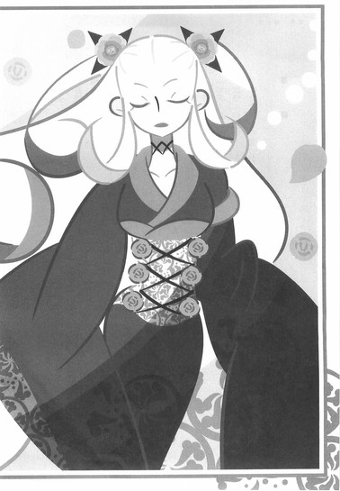
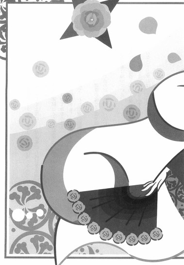
尾張城天守閣最上階──
否定姫は普段自分の屋敷でそうしているように、部屋の中央に佇んで、ただ──待っていた。昔段と違うのは場所と、そして上座に──尾張幕府八代将軍家鳴匡綱がいることだろう。
「お......おい、そのほうよ」
沈黙に耐えかねたのか、匡綱はそんな否定姫に、話しかけてきた。
「状況は──一体、どうなっておるのじゃ」
「ご心配なさらずに、大御所さま──ことはすべて順調に運んでおります。大御所さまの腹心である十一人衆のお陰で、わたし達の悲願はほどなく達成されそうですよ」
「そ、そうか」
安心したように、御簾の向こう側で頷く匡綱。
「で、ではことが済めば、あの十一人に褒美を取らせねばのう──」
「............」
既に否定姫は知っている。
家鳴将軍家御側人十一人衆が既に鑢七花と闘って倒されてしまっていることを知っている──しかしそれをいちいち『申し上げ』たりはしない。
そんなことをすれば、この小心な男は、ここから逃げ出してしまうだろう──むろん、そうさせないために、否定姫はこの部屋に詰めて、ある意味において家鳴将軍を見張っているのだが。
──厄介だった十一人衆は、七花くんが排除してくれたしねえ。
──こうも思い通りにことが運ぶと、怖いくらいだわ。
往々にして──こういうときには、予定外の災難に見舞われるものだから、迂闊に喜んでばかりもいられないが──
「こ──これでよいのじゃな？ これで──わしの天下は、家鳴家の天下は、千年の繁栄を約束されるのじゃな？」
「ええ──」
頷く否定姫。
この老人は、わたしの話をここまで聞いた上で、どうしてそんなめでたいことを信じていられるのか──と思いながら。
いい加減限界だ、と思いながら。
しかし、そのときだった。
部屋の襖が──勢いよく、蹴破られた。
こちら側に倒れてきて。
その向こうに──血塗れの男が立っていた。
ぼさぼさ頭に、鍛え抜かれた巨体──そのすべてが、真っ赤に染まっている。
羽織っていた絢爛豪華な衣装も真っ赤に染め抜かれ──それこそが粋だった。
天守閣に登ってきたのは──鑢七花だった。
左右田右衛門左衛門ではなく。
「............」
予定外の災難──か。
と、否定姫は、その事実を冷静に受け止めた。
「う、う......だ、誰じゃきさまは！」
匡綱が叫ぶ。
恐慌に支配された声で叫ぶ。
しかし、七花はそれを無視するように──手にしていたものを、否定姫の足下へと放り投げた。
まずはふたつの鉄のかたまり。
回転式連発拳銃。
自動式連発拳銃。
炎刀『銃』。
四季崎記紀の完成形変体刀十二本の最後の一本。
両方とも、銃身が無残に折れ曲がっていて──どう修理したところで、もはや使い物になりそうもない。
そして七花が放り投げたものがもうひとつ──それは、仮面だった。
『不忍』の二文字が記された、仮面だった。
「......右衛門左衛門からの伝言だ」
七花は──小さな声で言う。
血塗れで。
傷塗れになった七花が──小さな声で言う。
「あいつの散り際の一言だ──心して聞け」
「聞くわよ。何？」
否定姫は鉄扇で自分を扇ぎながら──さりげなく、足下の仮面に目を落としながら、頷く。
「『姫さま。あなたのために死ぬことを──お許しください』」
七花は、口調まで忠実に──彼の言葉を伝えた。
「あいつはそう言って、死んでいった」
「......最後まで、辛気臭い奴よね──そんなこと言って、わたしが感動するとでも思っているのかしら。まあいいわ」
否定姫は──早口でそう言って、鉄扇を、畳の上へと落とした。
その鉄扇が丁度仮面の上に落ち──音を立てる。
悲しい音を。
「それじゃ、さっさと終わりにしましょうか──七花くん。約束通り、わたしを殺してもいいわよ」
「残念ながら」
七花はゆっくりと歩を進めながら──畳を血で汚しながら、一歩ずつ前へと進みながら、否定姫の言葉に首を振る。
「あとひとりくらいしか、相手をできそうにない」
「............」
「炎刀『銃』の四発はともかく......、断罪炎刀のほうがきつかったな。炎刀の強度がもう少しあったら、やられてたのはおれのほうだ......」
言いながら──否定姫の前を通り過ぎて。
そのまま七花は──匡綱のほうへと向かう。
「なっ......！」
御簾の向こうから──どたどたと音がした。
立ち上がり、逃げようとして、転んでしまったらしい。
この状況で──今更、逃げられるわけもないというのに。
「ひ──否定姫！ 何をしておる──余を助けんか！」
「いやあ、無茶を言わないでくださいよ、大御所さま」
その方向を見ようともせず、否定姫は背中を向けたままで両手を広げる。
「わたしには戦闘能力はありませんし──それに、あなたが殺されなきゃ、話が終わらないじゃありませんか」
「な......何だと！」
「家鳴将軍家千年の繁栄──というのは嘘です。あなたと話すための方便でした。と言うか、そんなことをされちゃ、困るんですよ──このわたし、つまりは四季崎記紀の末裔としては。だって──尾張幕府、家鳴将軍家体制の崩壊こそが、四季崎記紀の目論見だったんですから」
否定姫は言った。
ことの真相を。
「まあ、正確には『某幕府』の『某将軍家体制』のはずだったんですけれどね──そっちの成立は阻止できたものの、代わりに似たようなあなたがたが天下を取って、同じように天下泰平を築いちゃったんじゃ、同じことですから。歴史の修正作用──ですか。まあ、それは旧将軍の手柄なんですけれどね」
「な......何を言っておる？ ぼ、『某幕府』とは何じゃ？」
「ありえたかもしれない未来の話ですよ。未来と言うより本来ですか」
「......で、ではそのほうは、最初から──」
「わたしの目的は、だからここであなたを殺すことだったのですが──十一人衆が邪魔でした。さすがの右衛門左衛門でも、手練れを十一人同時に相手にすることはできませんからね」
「だ、だから一人ずつ、戦わせて──い、一般警護兵を退かせたのも、まさか──」
「その十一人衆も七花くんが排除してくれました......だから、そのお礼として、あなたを殺す役は七花くんに譲りましょう。四季崎記紀の思惑通りに」
「......ひっ」
既に否定姫を詰問するような余裕は、匡綱にはなくなっていた。
御簾のすぐ前にまで──七花が来ていたからだ。
七花はそこで、脚を止めた。
まるで──値踏みをするように。
「よ、よせ──」
匡綱はそんな七花をどう見て取ったのか──命乞いの言葉を口にする。
「よ、余を殺してどうなるというのじゃ──どうしてそんなことをする。そ、そのほうは余のために、四季崎記紀の刀を集めてくれたのじゃろうが」
「あんたのためじゃないことは確かだ」
七花は──やはり、小さな声で言う。
既に呼吸することさえも苦しいという風に。
「とがめは──あんたみたいな奴のせいで、その生涯を棒に振っちまったんだな。自業自得と言えばそれまでだが」
「な......と、とがめ？ 誰のことじゃ？ 奇策士──のことか？そういう名前じゃったのか？」
「......今更あんたを殺したからって、とがめの無念が晴れるわけでも、ましておれの気が晴れるわけでもないんだけどな──」
「じゃ、じゃったら」
「けどさ。しめしはつけなきゃ、なんねーよな」
七花は──一旦、天井を見上げた。
と言っても、天井を見ているのではない。
目を閉じて──まるで何かを思い出しているかのようだった。
否定姫は横目で、そんな七花を窺う。
彼は何を回想しているのだろう──と。
そんなことを思う。
──まあ。
──あの不愉快な女のことに、決まっているか。
「おい、お姫さま」
七花は静かに──構えを取りながら。
四の構え『朝顔』を取りながら。
否定姫に声をかけた。
「とがめから、あんたに会ったら礼を言っておくように言われたんだけど」
「へえ？ ふうん──別に、お礼を言われるようなことはしていないけれど」
「ひとつだけ、訊いていいか？」
「何なりと」
「あんた、本当はとがめのこと、好きだったんじゃねーの？」
「............」
否定姫は、その素朴な問いかけに対し。
「あの不愉快な女ね」
と言って。
「嫌いじゃなく──」
一重。
「──なくも──」
二重。
「──なかったわ」
三重否定で、応えたのだった。
そっか、と七花は頷いて──まるで救われたかのように頷いて、より深く、身体をねじる。
間違って──外さないように。
最後の技を、外さないように。
締めを決して──誤らないように。
「ま──待て！ 落ち着け！ よ、余の話を聞け！い──命だけは！命だけは助けてくれ！」
家鳴匡綱は──取り乱して叫ぶ。
「そ、そうじゃ！ そのほうに天下をやろう！そのほう、天下が欲しくないか！」
「いるかぁ、そんなもん！」
虚刀流には奥義と言える技が合計で七つある。
一の奥義・『鏡花水月』。
二の奥義・『花鳥風月』。
三の奥義・『百花繚乱』。
四の奥義・『柳緑花紅』。
五の奥義・『飛花落葉』。
六の奥義・『錦上添花』。
七の奥義・『落花狼籍』。
それらの奥義を同時に、最速の組み合わせで発動させる、虚刀流の最終奥義、『七花八裂（改）』──あらん限りに血を撒き散らしながら、絢爛豪華な羽織を翻しながら、七花は力の限り、喉が潰れん限りに、雄叫びをあげる。
「ちぇりおーっっっ！」
■ ■
死力を尽くした、鑢七花のその雄叫びは。
尾張城下八百八町に──あますところなく響き渡ったと伝えられる。
終章
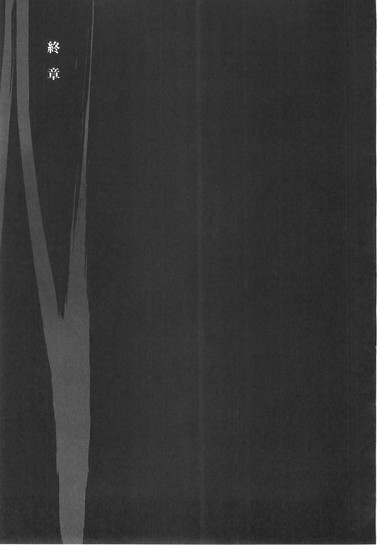
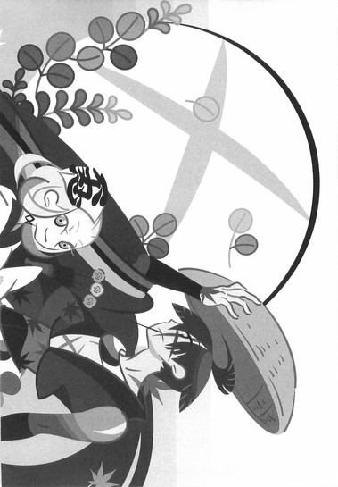
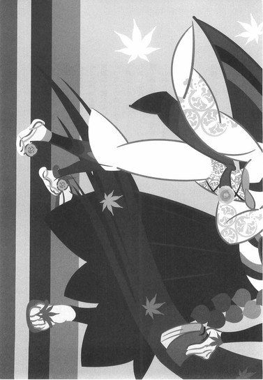
■ ■
丹後──不承島。
深奏海岸から海を挟んで向こう側。
そこに浮かぶ周囲四里ほどの小さな島。
地図にも載らないような無人島。
かつてこの島には三人の家族が住んでいた。
父親ひとり、娘ひとり、息子ひとり。
しかし今はもう──その誰もいない。
無人島は無人島へと戻り。
この島を不承島と呼ぶ者も、いなくなった。
■ ■
因幡──因幡砂漠。
この国における唯一の砂漠地帯。
その砂漠に唯一建てられている建築物──下酷城。
唯一の住人だった宇練銀閣亡きあと、管理する者もなく──放置されたままでありながら、その城は未だ、取り壊されることもなく、そこにあり続けていた。
砂漠と蜃気楼に囲まれた自然の要塞。
だが、その自然の要塞は、それゆえにその存在さえ気付かれることもなく──いつまでもそこにあり続ける。
朽ちようが果てようが。
千年先まで──あり続けるのだった。
■ ■
出雲──三途神社。
日本全国から事情のある女が集まり、黒巫女として神に仕えることとなる神社。
敦賀迷彩なき後、神主として代理の者が幕府から派遣され、それゆえにこの社から武装神社としての性格は失われたが──しかしそれで、この神社の警護体制がおろそかになったということはない。
むしろより強固になった。
それは、更に後に、幕府から派遣された少女──凍空こなゆきが、黒巫女達の護衛役としての役目を立派に果たしているからだ。類稀なる怪力を有するその少女は、持ち前のその天真爛漫な性格で、心に深い傷を負った黒巫女達を癒すにも一役買っているという話である。
■ ■
周防──巌流島。
二百年以上前、長刀と二刀の決闘が行なわれたその地は、剣士にとってふたつある聖地のひとつである。そしてこのたびその地で再び行なわれた決闘──最強と無刀の決闘は、新たな伝説として、この島の歴史に刻まれることになった。
ただし、その際、どのような決闘が行なわれたのか──最強に無刀がどう挑み、無刀が最強にどう打ち勝ったのか、その詳細を知る者はいない。
ただ、その決闘によって巌流島の面積が半分以下になってしまったという点から、その決闘の凄まじさが知れようというものだった。
■ ■
薩摩──濁音港。
そこではいつものように大盆が行なわれていた。
港町の中央に開かれた円形の闘技場。
その中心で──巨大な男が勝ち鬨をあげていた。
男の名は校倉必。
この港町を支配する、鎧海賊団の船長である。
かつては常に鎧を身に纏っていた彼だが──今は、その筋肉のかたまりのような肉体美を、観客に惜しげもなく晒していた。
鎧を着ていた頃と何ら変わりなく──この闘技場においての一番人気は彼である。いや、鎧を脱いで技が多彩になった分、人気が更に高まったとも言えるかもしれない。
これよりこの国は、是非もなく否応なく、海の外へと目を向けなければならない時代がやってくる──そのときに必要とされるのは、彼らのごとく、海を自在に行き来する者達であることは、まず間違いない。
■ ■
蝦夷──踊山。
壱級災害指定地域──一年中豪雪の吹き荒れる、永久凍土。
元々人が住めない土地として災害指定されていたこの地だが、唯一、集落を作って住んでいた凍空一族が、こなゆきを除いて全滅させられたことにより、本当に誰も住まない土地となった。
それでもそんなこととは関係なく、雪は降り止むことなく──この地の災害指定は、おそらくは永遠に、外されることがないだろう。
結局、自然の偉大さに、人間が勝つことはできないのだ──その人間が、人であれ刀であれ。
■ ■
土佐──清涼院護剣寺。
旧将軍の出した歴史に残る悪法、刀狩令の唯一の成果──刀大仏を擁する、剣士の聖地のふたつ目である。
巌流島と同様、この聖地で行なわれた天才と無刀の壮絶なる姉弟対決は、この寺の聖地としての名声を更に高めることになった。
鑢七実によって蹂躙された護剣寺流剣法の再興にはもう少し時間がかかることだろうが──今日も明日も、日本中の剣士は、清涼院参りのために、この鞘走山護剣寺を訪うのだった。
■ ■
江戸──不要湖。
壱級災害指定地域──この世のすべてのがらくたを詰め込んだような、ごみ溜めとしての湖。
ではあったのだが、その不要湖の番人であった日和号が排除されたことにより、このほど、不要湖の整備計画が立案された。
もとより、不要湖の壱級災害指定は、日和号ただ一体のために定められていたようなものである──その日和号が不要湖からいなくなってしまった以上、それは自然な流れなのかもしれない。
完全に、名前の通りの元の湖に戻るのには、百年単位の時間がかかってしまうだろうけれど──これからはそんな日も、現実味を帯びて語られることになる。
■ ■
出羽──天童将棋村。
巌流島と護剣寺が剣士にとっての聖地ならば、天童将棋村は棋士にとっての聖地である──かつてこの地では剣術もまた盛んだったのだが、それは時代と共に廃れていった。
しかし村の中心に、その廃れた剣術を、未だ頑なに守り続けている道場があった。
心王一鞘流道場──活人剣。
道場主がたったひとりで──頑なに剣の教えを守り続けている。
実は、その後、錆白兵と鑢七実、最強と天才を打ち破ったという無刀の男と勝負をして一度は勝ちを収めたという道場主──汽口慚愧の名にあやかろうと、一時期、門下生が少なからず集まりはしたのだが、汽口のあまりに厳しい指導に誰ひとりついていけず、あっという間に元通り、閑古鳥が鳴く環境へと逆戻りしたのだ。
汽口はその現象に首を傾げていたが。
それは至極当たり前の話である。
ともあれ、天童将棋村は今日も平和だった。
■ ■
奥州──百刑場。
先の大乱の首謀者、奥州の顔役、飛騨鷹比等の住んだ飛騨城跡であり、またその飛騨鷹比等にまつわる者があらかた刑に処された、いわゆる処刑場である。
この地には仙人が住むと噂されていた。
その仙人は見る者によって姿を変え、その仙人に出会った者は望むと望まざるとにかかわらず、自分自身に出会うことになる──という。
ただしそれはあくまで町の噂。
仙人──彼我木輪廻は、誠刀『銓』を奇策士に渡したことで自分の役割が終わったと判断したのか、既に百刑場からは姿を消していた。
どこにいったのか？
そんなことは、わかるわけがない。
ひょっとしたら、誰かの住む誰かの町で、知らないうちに誰かとして──誰かに出会っているのかもしれなかった。
■ ■
伊賀──新・真庭の里。
元々は幕府隠密班の根城であったこの山間の里は、幕府を裏切った真庭忍軍の隠れ蓑として利用されていたのだが──結局、その新・真庭の里として使用された期間は極々短い、一年弱のものだった。
真庭忍軍十二頭領。
真庭蝙蝠、真庭白鷺、真庭喰鮫、真庭蟷螂、真庭蝶々、真庭蜜蜂、真庭狂犬、真庭川獺、真庭海亀、真庭鴛鴦、真庭人鳥、真庭鳳凰。
そして非戦闘員も含めたその者達の配下。
真庭忍軍四十七名。
全員、刀集めにかかわったせいで、落命した。
暗殺専門のしのびの里、真庭忍軍──その名は、かつて彼らと敵対した相生忍軍同様に、歴史から消えていくことになるだろう。
もちろん彼らも──それを当然と受け止めるはずだ。
■ ■
尾張──尾張城。
家鳴将軍家の居城。
伝説の刀鍛冶にして、史上最大級の占術師、四季崎記紀──その目論見通りに、この国の長であった尾張幕府八代将軍家鳴匡綱は、虚刀流──虚刀『鑢』によって暗殺された。
それによって何が起こったか？
何も起きなかった。
残念ながら──なのか、幸運ながら──なのか。
その事実では、歴史の改竄には至らなかった。
単に──匡綱の直系の息子が、九代将軍を襲名しただけの話である。
尾張城に侵入したたったひとりの賊のことは、その他諸々のことも含め、完全に隠蔽された。虚刀流はあくまでも、旧将軍でさえもなしえなかった完成形変体刀を蒐集した英雄として、その旅に同行した奇策士と共に、語られることになったのだ。
奇策士が鑢七実に約束した、鑢六枝の名誉回復については、事実上、これでなされたことになる──結果として彼女は約束を守ったのだ。
四季崎記紀が──四季崎記紀の先祖が、四季崎記紀の末裔が行なおうとした、歴史に対する革命は、歴史に対する世直しは、そして歴史に対する破壊活動は──つまるところ、失敗に終わったのだった。
そして──
■ ■
能登──星砂街道。
土ではなく踏み固められた硬い砂で構成された、海岸沿いのその街道にある一軒の茶屋で、編み笠をかぶったひとりの男が、暢気そうに団子をくわえていた。
背の高い、巨大な男である。
ぼさぼさ頭に、筋肉質に引き締まった身体。
傷だらけのその肉体を覆い隠すように、絢爛豪華な、十二単衣を二重に重ねたような、女物の派手な着物を羽織った男──である。
虚刀流七代目当主──鑢七花。
しかし彼は、もうその名前を表立って名乗ることはできない──世間的には英雄扱いされているとは言え、尾張城へと侵入し、こともあろうに当時の将軍を暗殺してのけた彼は、当然、幕府からは追われる身だからだ。
もっとも、本人はそれを気にしているのかいないのか、果たしてそんな適当な編み笠だけで変装をしているつもりなのか、それとも最初から隠れるつもりなどないのか、暢気そうに──気楽そうに。
団子を食べているだけだった。
「......んー。やっぱ広いな、日本は」
言いながら──脇においてあった風呂敷の中から、なにやら帳面のようなものを取り出す。そこに書かれていたのは字ではなく絵だった。
筆で描かれた、つたない絵。
それを見て──七花は首を傾げる。
描かれた絵に、不満があるかのように──
「あー。いたいた。七花くん、見っけ」
と。
街道の西の方向から、ひとりの女が、駆け足気味に、茶屋へと歩いてきて──そこに座っている七花を無遠慮に指さした。
金髪碧眼──和装の女。
七花の巨体、絢爛豪華な羽織以上に、この国においてはただそこにいるだけで目立ってしまう、そんな姿の女──言うまでもなく、否定姫だった。
いや。
彼女もまた七花同様に──表立って名乗ることができない身分なのだが。
彼女にとってはそれが変装のつもりなのか、金髪は以前より短く揃えられて──着物もより簡素なものへと変えられている。そして、編み笠代わりなのだろう、まるで縁日で遊ぶ子供のごとく、頭部右側に奇妙な意匠の仮面をくくりつけていた。
その仮面には──『不忍』の二文字が記されている。
表立って名乗ることができない。
とは言え、そもそも否定姫というのは通称であって彼女の名前ではない──それでも、髪を切って、簡素な着物に着替え、奇妙な仮面を身につけていても、『姫』と呼ばれるに相応しいだけの気品を、彼女はまったく失っていなかった。
「ったく──あんま先々行かないでよ、七花くん。障子紙並みの強度を自称していたあの不愉快な女ほどじゃないとは言っても、わたしもそんな体力あるほうじゃないんだからさ。基本的にずっと屋敷にいた、引きこもりなんだから」
「......別についてきてくれと頼んだ憶えはないぞ」
「わたしは頼まれなきゃ動かないような、冷血な人間じゃないからねえ」
「ついてくるなと頼んだ憶えならある」
「んなこと言っちゃって。ちょっと距離が開いたらこうしてさりげに待ってくれてんじゃない。あ、このお茶、飲んじゃうわよ」
言って、勝手に隣に座って、勝手に湯のみに手をかける否定姫。
そして七花が手にしていた帳面を横から覗き見て、
「んー？ あーこんなの全然駄目、はい没ー！」
と、勝手に奪い取って、勝手に開かれていた箇所を破りとって、勝手にくしゃくしゃとまるめてしまった。
傍若無人さでは明らかにとがめ以上だ、と思いながら、七花は、しかし自分でも出来が気に入らなかったのも事実である、そもそも描き直すつもりだった、文句を言わずにすませることにした。
「何よ。なんで没を出してあげたのにありがとうって言わないの？」
「......右衛門左衛門はよくあんたの下で、何年も働いてられたな......おれがあんたの部下だったらと思うと、ぞっとするぜ」
「否定する。あいつはあいつで、結構幸せだったと思うわよ──ってか、まあ、これから先はあんま否定否定言わないほうがいいのかな？」
まあ、と否定姫は言う。
七花のお茶を飲みながら。
「同じ凶状持ち同士、仲良くやりましょうよ──あんたの地図作りってのにも、こうして協力してあげるからさ」
地図作り。
それは、奇策士とがめが七花についた──嘘。
彼女の言葉を信じるならば、彼女にそのつもりはあったのだろうけれど、彼女にそれを実行するつもりはなかったのだろう。
けれど七花は、それを今、実行に移していた。
つたなく絵を描きながら。
まずは、刀集めの旅では訪れることのなかった、北陸地方に脚を伸ばしたのだった。
「......けど、行った場所に対する記憶も曖昧だし、最低でも、日本をもう一周はしなくちゃならないだろうな......、まあ、汽口やこなゆき、校倉なんかにも会えるだろうから、よしとするか」
「わたしもそうだけど、あんたも随分とお気楽よね──自分が追われてるって自覚はあるの？まああちらさんも、歴史に残らない大逆人が、まさか地図作りにいそしんでいるとは思わないでしょうね」
「......あんたがそれに同行しているとも、まさか思っちゃいないと思うけどな」
「いやあ。さすがのわたしでも、あそこからもう一度復権するのは無理だって。右衛門左衛門ももういないことだし──」
否定姫は──しかし、満足げに言うのだった。
この結果に。
この成果に──何の不満もないように。
「──四季崎記紀は、結局、負けちゃったのよ。計算違いは──旧将軍から始まった。そして飛騨鷹比等......その娘、容赦姫が決定的だったわね」
「............」
「なんで彼我木輪廻が誠刀『銓』を地中に埋めちゃったかって言えば、それは旧将軍の追撃を避けるためだろうし──そしてそのせいで、飛騨鷹比等は歴史の矛盾に気付いた。そしてその娘が──完了形変体刀、虚刀『鑢』の所有者となった。......わたしが見るところ、飛騨鷹比等を討った大乱の英雄・鑢六枝が島流しになって、虚刀『鑢』が一時的に島流しに遭い──歴史から削除されちゃったのが、痛かったんでしょうね」
「島流しね。おれに言わせりゃ、歴史の改竄なんてそれこそ夢物語だぜ。そもそもおれは予言やら何やら、そんなものは信じちゃいない」
七花は言う。
「親を殺された復讐とか、誰かのことが好きだったとか、そんな理由のほうがよっぽどわかりやすい。あんたの言う通りに、百年後にこの国を、海の向こうからやってくる連中が滅ぼそうとしても──そのときは、そのときの連中が、覚悟を決めて戦えばいいだけの話さ」
「初代の鑢一根が、四季崎記紀にそう言ってくれてりゃあねえ」
にんまりと──微笑を浮かべる否定姫。
「ま......、改竄は失敗しても、改変くらいはできただろうから、百年後の連中も、ただ滅ぼされはしないでしょうけどね。ちょっとは根性出してもらいましょう。あ、そう言えばまだ言ってなかったわね。わたし、尾張城を抜け出してくるとき、変体刀の残り九百八十八本に、塩水かけてきたから。そろそろ錆びてる頃かしらね？」
「......なんてことをするんだ、あんたは」
「錆びないって特性を帯びた刀は絶刀『鉋』のことを指すだろうから、これでうちの馬鹿な先祖がやらかした歴史の改竄行為の後始末は、あらかた終了って感じになるかしら」
「そっか......」
「もっとも、家鳴将軍家的には、七花くんが破壊した完成形変体刀十二本も含めて、あらゆる変体刀はすべて将軍家が保有している──と、そう喧伝し続けるでしょうけれどね。それが、将軍家の千年の繁栄を約束するものだと信じて」
「......でも、結局、変体刀自体に、持つ者に天下を与えるとか、そんな力はなかったんだろう？」
「現実にはね。だけど幻想はあった」
否定姫はそう言い切った。
あんたも悪だな、と、七花は言った。
どう致しまして、と否定姫は応じる。
「じゃ、ここから先は──お互い、傷心旅行といきましょうか」
「傷心旅行ね──」
七花は──思い出す。
刀集めに殉じた、あの一年のことを。
睦月──とがめと出会った。
如月──とがめと一緒に砂漠を歩んだ。
弥生──とがめを抱えて階段を昇った。
卯月──とがめとの絆が深まった。
皐月──とがめと一緒に温泉に浸かった。
水無月──とがめとふたりで、吹雪の山を登った。
文月──とがめと共に、剣士の聖地、護剣寺へ清涼院参りをした。
葉月──とがめを肩車して、不要湖の探索をした。
長月──とがめと口を吸いあった。
神無月──とがめの故郷を訪れた。
霜月──とがめと将来のことを語らった。
師走──とがめと別れた。
「──特に、傷ついちゃいないけどな」
「そうなの？」
「あんたは、右衛門左衛門に、一個でも傷をつけられたのか？」
「まさか──そんなわけないじゃない」
否定姫は苦笑する。
七花の幼稚な質問が、普通におかしかったように。
「あんたの身体中の傷は、右衛門左衛門がつけたものだけどね──まあ、英雄として歴史に名を残すこととなった虚刀流に傷を負わせた右衛門左衛門は、大したものだってことになるのかしら」
「こなゆきにも腕の骨を折られたことがあるけどな──まあ、こなゆきに負わされた傷と右衛門左衛門に負わされた傷とじゃ、深さが違うか......、右衛門左衛門のときは死ぬかと思ったし。......いや、死ぬつもりだったし、かな」
「よくまあ死ななかったもんだわ」
「今から思えば、こういう風に」
七花は──羽織っている着物の裾をつまんで、ひらひらと揺らしてみせた。
絢爛豪華な──女物の派手な着物。
「とがめの服を着ていたのがよかったみたいだぜ──こんなもんが防御力になるのかって話だけど、どうもこんな布切れでも、一枚羽織ってるだけで随分違うんだってさ」
「まして、そんな十二単衣みたいな服を羽織ってりゃあねえ──精密射撃であるがゆえに弾道外れちゃうだろうし、わずかながら威力も落ちるわけか。あはは──それがあんたにとっての賊刀『鎧』だったって話かしら？」
「もっとも、同じようにこいつを着てたとがめは死んじゃったんだから、おれが生き残れたのは、やっぱり奇跡ってことになるんだろうけどな──」
いくら右衛門左衛門が精密射撃で急所を外したとは言え──撃たれたあとのとがめと、七花があれだけの数の言葉を交わすことができたのは、とがめのその厚着のせいだったのだろうとは思うけれど。
それもそれで──立派な奇跡だと。
七花は考える。
「いやいや」
しかし。
否定姫は彼女らしく──七花の言葉を、否定した。
とても楽しそうに、否定した。
「七花くん、そういうときは、『とがめがおれを守ってくれたんだ』って、格好つけて、そういう風に決めつけちゃうべきなのよ」
「............」
「布きれ一枚どころか──障子紙一枚でも、結構違うもんなのよ」
「......だとしたら」
七花は着物の裾から手を離して、言う。
「あと一回だけ、とがめの命令をきいてやってもいいのかもしれないな」
「うん？」
「好きに生きてみようかな──ってさ」
恋ではなく、愛でもない。
七花のとがめに対する気持ちを、彼我木輪廻はそう評した。
今となっては、その通りだったかもしれない。
世間知らずの島育ちの、幼い気持ちだったかもしれない。
けれど──それでも確信はある。
自分は確かに、奇策士とがめというあの女に──惚れていたのだと。
彼女のことが好きだったのだと。
そう信じる。
だから──これからも。
世間を知り、人と出会い、覚悟を決めて──好きに生きてみようと思う。
「......じゃ、そろそろ行くか」
「行かなくもないわ」
七花は立ち上がってから帳面を風呂敷に仕舞い直し、代わりにお茶と団子の分の代金を取り出して席の上に置き、歩み始める──否定姫も、すぐにその後ろについた。
そしてふたりで、砂で固められた街道を歩む。
「七花くん、これからどうするの？」
「能登はもう十分に見たから──次は加賀かな」
「加賀はお金がいっぱいあるらしいわよ？ ここらでそろそろ軍資金を補充しといたほうがよくない？」
「そういう方面はあんたに任せるよ。なんであれ一緒にいるんだから、ちょっとは役に立ってくれ」
「厳しいわねえ。誰に似たんだか」
「その代わり、追っ手が来たらおれが戦ってやるよ──右衛門左衛門から受けた傷はまだ治り切ってないけど、女一人守るには十分過ぎる」
「あっそ。じゃ、そんときはよろしく」
「ああ。ただしその頃には、あんたは八つ裂きになっているかもしれないけどな」
「なんでっ!?」
そんな風に、軽口を叩き合いながら。
巨体に絢爛豪華な羽織、編み笠をかぶったぼさぼさ頭の男と、金髪碧眼に和装、側頭部に奇妙な仮面をつけた女という、この上なく人目を引くお尋ね者ふたり組は──能登から、次の地へと旅立っていった。
鑢七花と否定姫。
目撃証言は、このときの茶屋の主人のものが最後で──ここから先の彼らの足取りは、一切記録されていない。本当に加賀へ向かったのかどうか──天童将棋村や三途神社、濁音港を訪れ、旧知の者達と再会したのかどうかも、果たして、定かではない。
あるいは旅の途上で野垂れ死んだかもしれないし、見事日本地図を完成させて、その後、海の外へと、旅の行き先を定めたかもしれない。
いずれにしても、それを確かめるすべはない。
しかし──彼と彼女は、ことが終わったあとにも、人と刀にまつわる歴史的な企みが失敗に終わったあとにも、短期間であれ長期間であれ、確かに生きていたのだった。
それはきっと──誰もが望んでいたことだ。
■ ■
復讐を果たせなかった者。
目的を果たせなかった者。
志半ばで倒れた者、思いを遂げられなかった者。
負けた者。挫けた者。朽ちた者。
一生懸命頭張って、他のあらゆるすべてを犠牲にしてまで踏ん張って、それでも行為がまったく結果に繋がらず、努力はまったく実を結ばず、理不尽に、あるいは不合理に、ただただ無残に、ただただ無様に、どうしようもなく後悔しながら死んでいった者達の──夢と希望に満ちあふれた未来を予感させる前向きな物語は、ここで静かに幕を下ろす。
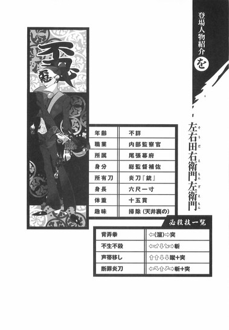
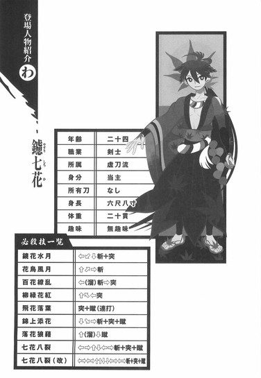
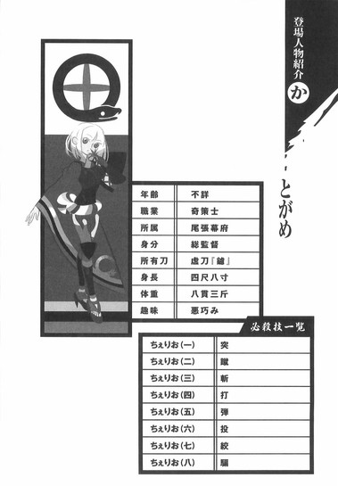
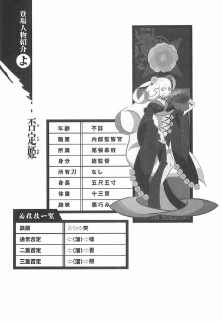
アトガタリ
僕はよく目的と、そのために取るべき手段の話をするんですけれど、しかし一口に目的と手段と言ったところで、なかなか語り尽くせません。目的と手段が正しくとも結果が裏目に出ることなどままありますし、目的が間違っていて手段も間違っているのに、結果としてはなんだかハッピーエンドっぽい感じに収まることも結構よく聞く話です。どうしてそんなことになるのか不思議と言えば不思議ですが、この不思議を解き明かす鍵は意外と単純明快で、人間は時と場合に応じて、つまりは臨機応変に、目的も手段も変えてしまうからなのだと思います。「あー、やべー、このまま行ったら失敗する流れじゃん、どうするよ......、ああそうだ、最初からこれが目的だったってことにすればいいんじゃない？」とか、そんな感じです。あるいは「あ、このやり方だと確実に失敗するわ......、どうすっかなー、あ、そうだ、ここからこういう風にやり方を変えれば、むしろ手早く目的を達せられるかも？かもかも？」とか。かもかもって！まあ、そういう本人の心境の変化があればこそ、傍観者からは『結果的に』、矛盾なく出来事が進行したように観察されるわけです。人間、ひとつの意志、ひとつの手段、そしてひとつの目的を頑なに抱き続けることのほうが難しいという話なんですが、そういうズレってひどく個人的なものですから、記録上は残りませんよね。歴史の教科書とか、ふと読み返してみるとまるでひとつの物語のようですけれど、どうでしょう、普通に考えてみれば、たぶん歴史の登場人物もみんな、臨機応変に、悪く言えば場当たり的に、適当なことを言ったりそれを翻したりしてきたんだろうなあと思います。それでも『結果的に』物語っぽくなるのは、まあロマンと言えばロマンですか？
本書は刀語の最終巻です。なんて言ったらいいものかわかりませんけれど、完結してしまうものですね。見てる側としては、「うわあ、なんか本当に終わらせちゃった。引くわー」みたいな感じでしょうか？結局、奇策士とがめと虚刀流当主鑢七花の旅物語は、僕が今まで書いてきたどの物語とも違う、最初から最後まで独特なものになったようですが、まあ物語の中のことは物語の中で語り終えたはずなので黙して語らず、最後くらいは普通の本らしく、普通の謝辞で締めましょう。自分から言い出したこととは言え、このような企画を作者ひとりで完走できるわけもなく、むしろ常に中断のタイミングを計っていたくらいの心意気だった僕を、くじけることなく一年間叱咤激励してくれた大河ノベルスタッフの皆さまには、きっと一生頭があがりません。イラストレーターの竹さんが舞台上の主役なら、彼らこそが舞台裏の主役です。なにぶんお世話になった人の数が多過ぎて、全員を紹介することはとても不可能なのですが、特に名前をあげて、太田克史さまと柴山佑紀さまと岩井君仁さまに、厚く御礼申し上げます。
そんな感じで、『刀語 第十二話 炎刀・銃』でした。
物語の完結まで付き合ってくださった読者のみなさまには、いつも通り、最上級の感謝を。
あなたのお陰で、またひとつ、素敵な物語が生まれました。
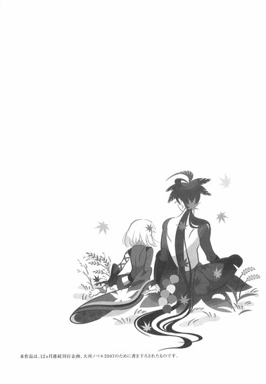
底本：刀語 第十二話 炎刀・銃
西尾維新
２００７年12月３日第１刷発行